第3章 蛋白质结构与功能
译自 Molecular Cell Biology, 第8版 · Lodish et al. · Protein Structure and Function · 保留全部图表（点击图片可放大）
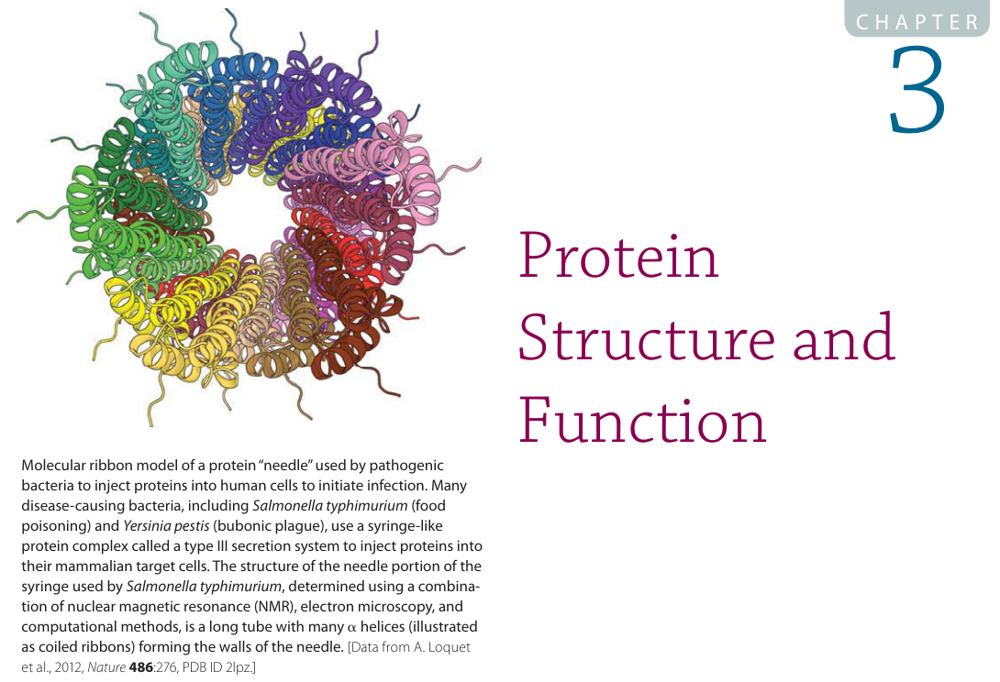
蛋白质是氨基酸的聚合物，其大小和形状多种多样。它们在三维结构上的多样性，主要反映了长度和氨基酸序列的变化。一般来说，组成任一蛋白质的线性、不分枝的氨基酸聚合物，会折叠成仅一种或少数几种密切相关的三维形状——称为构象。蛋白质的构象，连同其氨基酸侧链独特的化学性质，共同决定了它的功能。在某些情况下，当蛋白质与其他分子发生非共价或共价结合时，其构象乃至功能都会发生变化。由于具有众多不同的形状和化学性质，蛋白质能在细胞内外执行令人眼花缭乱的多种功能，这些功能要么对生命至关重要，要么为含其所在的细胞或生物体提供选择性的进化优势。因此，表征蛋白质的结构与活性是理解细胞如何工作的基本前提，也就不足为奇。本书很大篇幅都致力于考察蛋白质如何协同作用，使细胞得以存活并正常行使其功能。
尽管蛋白质结构多种多样，大多数蛋白质可归入少数几个宽泛的功能类别之一。例如，结构蛋白决定细胞及其胞外环境的形态，并作为导丝或轨道引导分子和细胞器在胞内移动。它们通常由多个蛋白质亚基组装成非常大的长形结构。骨架蛋白则将其他蛋白质聚集到有序的
阵列中，使其能比各自分散时更高效地执行特定功能。酶是催化化学反应的蛋白质。膜运输蛋白允许离子和分子跨细胞膜流动。调节蛋白作为信号、传感器和开关，通过改变其他蛋白质和基因的功能来控制细胞的活动。调节蛋白包括信号蛋白，如将胞外信号传递到细胞内部的激素和细胞表面受体。马达蛋白负责移动其他蛋白质、细胞器、细胞乃至整个生物体。同一种蛋白质可同时属于多个功能类别，例如某些细胞表面信号受体既是酶又是调节蛋白，因为它们通过催化化学反应将信号从胞外传递到胞内。为高效完成多种使命，一些蛋白质组装成大型复合物，常称为分子机器。
蛋白质何以能执行如此多样的功能？它们依靠少数几种简单活动来实现。最根本的是，蛋白质能够结合——彼此结合、与其他大分子（如 DNA）结合、以及与小分子和离子结合。在许多情况下，这种结合会诱导蛋白质发生构象变化（三维结构的改变），从而影响其活性。结合建立在蛋白质与其结合伙伴之间的分子互补性之上，如第 2 章所述。第二种关键活动是酶催化。蛋白质的适当折叠会将其某些氨基酸侧链以及主链的某些羧基和氨基置于允许共价键重排催化的位置。第三种活动是折叠成膜上的通道或孔，分子和离子可经此流动。尽管这些是蛋白质尤为关键的活动，却并非仅有的活动。例如，生活在冰冷水域中的鱼类——南极冰鱼和北极鳕鱼——其循环系统中含有抗冻蛋白，以防止水结冰。
要全面理解蛋白质如何使细胞得以生存和繁衍，需要鉴定并表征一个细胞所使用的全部蛋白质。从某种意义上说，分子细胞生物学家希望编纂一份完整的蛋白质"零件清单"，并撰写一份描述这些蛋白质如何工作的"用户手册"。随着越来越多生物的整个基因组（全套基因）被测序，编纂全面的蛋白质清单近年来已成为可能。通过对基因组序列的计算机分析，研究者可推断出其所编码蛋白质的氨基酸序列和大致数量（见第 6 章）。"蛋白质组"一词被创造出来，指代一种生物的整个蛋白质 complement。人类基因组包含约 20,000–23,000 个编码蛋白质的基因。然而，mRNA 产生过程中的变异（如可变剪接，见第 10 章）以及一百多种蛋白质修饰，可能产生数十万种不同的人类蛋白质。通过将功能未知的蛋白质的序列和结构与功能已知的蛋白质相比较，科学家通常能推断出许多关于这些未知
蛋白质功能的信息。过去，常先通过遗传学、生物化学或生理学方法表征蛋白质功能，随后才鉴定出具体的蛋白质。而在当今的基因组学和蛋白质组学时代，通常是先鉴定蛋白质，再确定其功能。
本章中，我们开始研究蛋白质的结构如何产生其功能——这一主题贯穿全书（图 3-1）。第一节考察氨基酸构建块的线性链如何排列成三维结构层级。下一节讨论蛋白质如何折叠成这些结构。随后转向蛋白质功能，聚焦于催化化学反应的酶。细胞用来控制蛋白质活性和寿命的各种机制将在其后介绍。本章结尾讨论
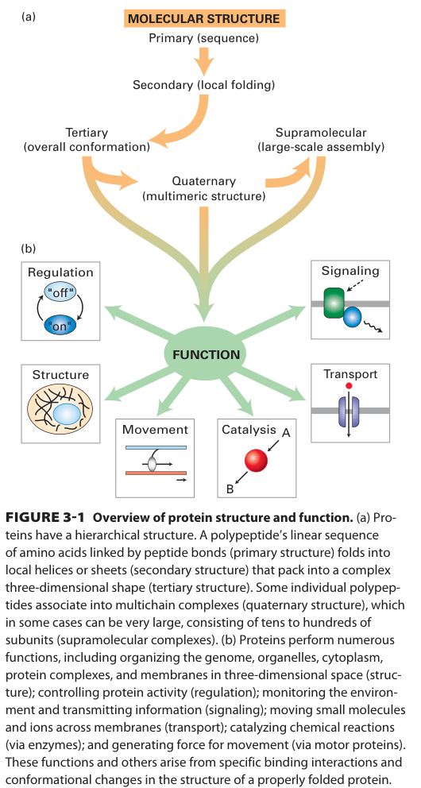
| MOLECULAR STRUCTURE | 分子结构 |
| Primary (sequence) | 一级（序列） |
| Secondary (local folding) | 二级（局部折叠） |
| Tertiary | 三级 |
| (overall conformation) | （整体构象） |
| Quaternary | 四级 |
| (multimeric structure) | （多聚体结构） |
| Supramolecular | 超分子 |
| (large-scale assembly) | （大尺度组装） |
| FUNCTION | 功能 |
| Signaling | 信号传导 |
| Regulation | 调控 |
| Catalysis | 催化 |
| Structure | 结构 |
| Movement | 运动 |
| Transport | 运输 |
鉴定、分离和表征蛋白质的常用技术，以及蓬勃发展的蛋白质组学领域。
3.1 蛋白质的层级结构
在许多蛋白质中，聚合物链折叠成独特的三维形状，这种形状主要由氨基酸线性序列中各区域之间的非共价相互作用所稳定。理解蛋白质如何工作的一个关键概念是：功能往往源自三维结构，而三维结构由蛋白质的氨基酸序列和分子内非共价相互作用共同决定。将生物结构与功能联系起来的原理，最初由生物学家约翰·冯·歌德（1749–1832）、恩斯特·海克尔（1834–1919）和达西·汤普森（1860–1948）所阐述，他们的工作在生物学乃至更广泛领域都产生了深远影响。事实上，他们的思想极大地影响了 20 世纪初由"有机"建筑学派所开创的理念，该学派的箴言"形式追随功能"（路易斯·沙利文）和"形式即功能"（弗兰克·劳埃德·赖特）正是其缩影。在此，我们从四个组织层级来考察蛋白质的建筑学：一级、二级、三级和四级（图 3-2）。
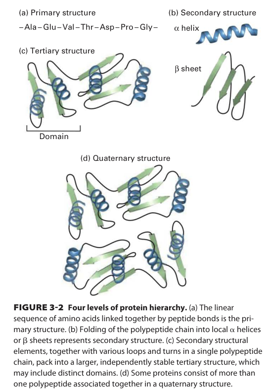
| (a) Primary structure | (a) 一级结构 |
| (b) Secondary structure | (b) 二级结构 |
| (c) Tertiary structure | (c) 三级结构 |
| (d) Quaternary structure | (d) 四级结构 |
| Domain | 结构域 |
| α helix | α螺旋 |
| β sheet | β折叠 |
一级结构是蛋白质的氨基酸线性排列
如第 2 章所述，蛋白质是由 20 种不同氨基酸构成的多聚物。各个氨基酸通过共价酰胺键（称为肽键）连接成线性、不分枝的链。一个氨基酸的氨基与另一个氨基酸的羧基之间形成肽键，净释放一分子水，因此属于脱水反应的一种（图 3-3a）。每个氨基酸残基中重复的酰胺 N、α 碳（Cα）、羰基 C 和氧原子构成蛋白质分子的主链，各种侧链基团从其上伸出（图 3-3b、c）。由于
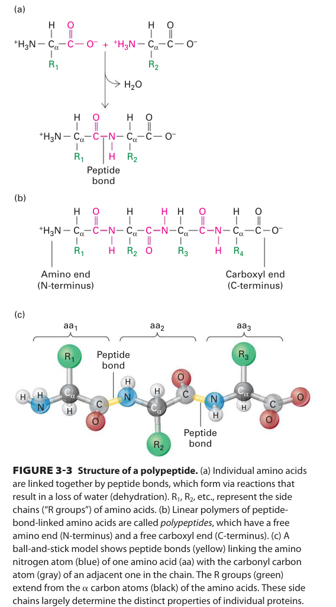
| Peptide bond | 肽键 |
| Amino end (N-terminus) | 氨基端（N端） |
| Carboxyl end (C-terminus) | 羧基端（C端） |
肽键的连接方式，主链表现出方向性，通常称为 N 端到 C 端取向，因为所有氨基都位于 Cα 原子的同一侧。因此，蛋白质的一端有一个游离（未连接）的氨基（N 端），另一端有一个游离的羧基（C 端）。蛋白质链的序列按惯例书写时，N 端氨基酸在左，C 端氨基酸在右，氨基酸从 N 端起依次编号。
蛋白质的一级结构就是组成它的氨基酸残基的线性共价排列，即序列。最早被测定一级结构的蛋白质是 20 世纪 50 年代初的胰岛素。如今已知序列数已超过 1000 万，且每日都在增长。表示由氨基酸聚合形成的链的术语有很多。由肽键连接、具有确定序列的短氨基酸链称为寡肽，或简称肽；较长的链称为多肽。肽一般含少于 20–30 个氨基酸残基，而多肽通常长 200–500 个残基。迄今描述过的最长蛋白质是肌肉蛋白 titin（肌联蛋白），其某些形式可超过 34,000 个残基。我们通常将"蛋白质"一词保留给具有明确三维结构的多肽（或多肽复合物）。
蛋白质或多肽的大小，既可以用道尔顿表示其质量（1 道尔顿等于 1 原子质量单位），也可以用分子量（MW）表示，后者是无量纲数，等于以道尔顿为单位的质量。例如，一个 10,000-MW 的蛋白质质量为 10,000 道尔顿（Da），即 10 千道尔顿（kDa）。本章稍后将讨论测量蛋白质大小及其他物理特征的不同方法。未经共价修饰的蛋白质的精确分子量，可通过对其氨基酸序列中所有组成氨基酸的重量求和而轻易确定。例如，酵母基因组所编码的蛋白质平均分子量为 52,728，平均含 466 个氨基酸残基。蛋白质中氨基酸的平均分子量为 113（考虑到其平均相对丰度）。利用此值，可在已知蛋白质分子量时估算其未知序列中的残基数，反之亦然。蛋白质中一个或多个氨基酸的共价修饰——例如磷酸化或糖基化（见第 2 章和第 13 章）——会改变这些残基的质量，从而改变所在蛋白质的质量。
一个典型的真核（有核）细胞中有多少蛋白质？让我们以一种这样的细胞——肝细胞（哺乳动物肝脏中的主要细胞类型）为例做简单计算。这种大致为边长 15 μm（0.0015 cm）立方体的细胞，体积为 3.4 × 10⁻⁹ cm³（或毫升，ml）。假设细胞密度为 1.03 g/ml，该细胞重 3.5 × 10⁻⁹ g。由于蛋白质约占细胞重量的
20%，细胞蛋白总重为 7 × 10⁻¹⁰ g。假设平均蛋白质分子量为 52,728 g/mol，我们可由总蛋白重量和阿伏伽德罗数（任意化合物每摩尔所含分子数，6.02 × 10²³）计算出每个肝细胞中蛋白质分子总数约为 7.9 × 10⁹。进一步推算，考虑到一个肝细胞含约 10,000 种不同蛋白质，因此平均每种蛋白质每个细胞接近一百万个分子。事实上，不同蛋白质的丰度差异很大，从相当稀有的胰岛素结合受体蛋白（每细胞 20,000 个分子）到结构蛋白肌动蛋白（每细胞 5 × 10⁸ 个分子）不等。每个细胞都精确调控每种蛋白质的丰度，使其在任何给定时刻都以适合其细胞功能的数量存在。我们将在本章稍后以及第 9、10 章学习细胞用来调控蛋白质水平的机制。
二级结构是蛋白质建筑学的核心元件
蛋白质结构层级中的第二级是二级结构。二级结构是多肽链片段的稳定空间排列，由主链酰胺基与羰基之间的氢键维系，常涉及重复的结构模式。多肽链某一片段形成特定二级结构的倾向，取决于其氨基酸序列（见下文 3.2 节）。一条多肽可在链的不同部位含有多种类型的二级结构，视其序列而定。主要的二级结构有 α 螺旋、β 折叠以及短的 U 形 β 转角。未形成这些结构但仍有明确、稳定形状的多肽部分，被称为不规则结构。"无规卷曲"一词适用于多肽链上高度柔韧、无固定三维结构的部分。在普通蛋白质中，60% 的多肽链以 α 螺旋和 β 折叠形式存在；其余部分为不规则结构、卷曲和转角。因此 α 螺旋和 β 折叠是大多数蛋白质内部的主要支撑元件。此处我们探讨二级结构的形状及有利于其形成的力。在后续各节中，我们考察二级结构如何一起折叠成更大、更复杂的排列——即三级结构。
α 螺旋 在折叠成 α 螺旋的多肽片段中，主链形成螺旋结构，其中每个肽键的羰基氧原子与朝 C 端方向再隔四个残基处的氨基酸的酰胺氢原子形成氢键（图 3-4）。在 α 螺旋内，所有主链氨基和羧基彼此形成氢键，仅在螺旋的极始端和极末端除外。这种周期性排列的键赋予螺旋从氨基到羧基端的
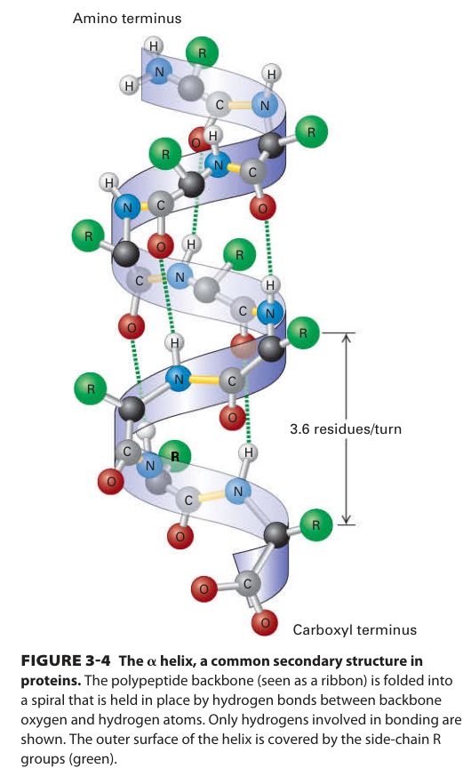
| Amino terminus | 氨基端 |
| Carboxyl terminus | 羧基端 |
| 3.6 residues/turn | 每圈3.6个残基 |
方向性，因为所有氢键受体（即羰基）都具有相同取向（在图 3-4 中指向下方），由此形成一个每 3.6 个残基完成一整圈螺旋的结构。一条 36 个氨基酸长的 α 螺旋有 10 圈螺旋，长 5.4 nm（每圈 0.54 nm）。α 螺旋中氢键稳定的氨基酸排列将主链固定在一根笔直的杆状圆柱上，侧链向外伸出。某条特定螺旋在蛋白质内部的相对疏水或亲水性质，完全由侧链的特征决定。在水溶性蛋白质中，带有向外伸出的极性侧链的亲水螺旋倾向于位于外表面，在那里与水环境相互作用；而带有非极性疏水侧链的疏水螺旋则倾向于埋藏在折叠蛋白质的核心内。嵌入细胞膜疏水核心的蛋白质（见第 7 章）
常利用一条或多条长 20–25 个残基的疏水螺旋来跨越膜。氨基酸脯氨酸通常不出现在 α 螺旋中，因为其氨基与侧链中的碳形成共价键，使其无法通过正常的氢键来稳定主链。虽然经典 α 螺旋是蛋白质中内在最稳定、最常见的螺旋形式，但也存在一些变体，如更紧密或更松弛扭转的螺旋。例如，在一种称为卷曲螺旋的特化螺旋中（稍后数节描述），螺旋缠绕得更紧（每圈 3.5 个残基，0.51 nm）。
β 折叠 另一种二级结构——β 折叠——由侧向堆叠的 β 链组成。每条 β 链是一段短（5–8 个残基）、几乎完全伸展的多肽片段。与 α 螺旋中氢键发生在近乎相邻残基的主链氨基与羰基之间不同，β 折叠中的氢键发生在不同但相邻的 β 链之间的主链原子之间，且与主链原子链的方向垂直（图 3-5a）。这些不同的 β 链（图中以绿色和蓝色箭头表示）可以在单条多肽链之内，β 链片段之间有短环或长环；也可以位于由多条多肽组成的蛋白质中的不同多肽链上。图 3-5b 展示了两条或多条 β 链如何排列成相邻的行，形成近乎二维的 β 折叠片（简称折叠片），其中片平面内的氢键将 β 链维系在一起，侧链则向平面上方和下方伸出。与 α 螺旋一样，β 链具有由肽键取向所定义的方向性。因此，在折叠片中，相邻 β 链可以交替相反（反平行）方向排列（见图 3-5a），也可以相同（平行）方向排列（图 3-5c）。在某些蛋白质中，β 折叠构成蛋白质疏水核心的一部分（下文描述）或结合其他分子的开放空间的一侧；在某些镶嵌在膜中的蛋白质中，β 折叠弯曲并形成一个亲水的中心孔，离子和小分子可经此流动（见第 7 章）。
β 转角 β 转角由四个残基组成，位于蛋白质表面，形成使多肽主链方向逆转的急转弯，常转向蛋白质内部。这些短的 U 形二级结构常通过其末端残基之间的氢键稳定（图 3-6）。甘氨酸和脯氨酸常见于 β 转角。甘氨酸缺乏大的侧链，脯氨酸具有内在的弯折，使多肽主链能折叠成紧密的 U 形。β 转角帮助长多肽折叠成高度紧凑的结构。多肽主链方向的反转也可由长于四个残基、形成弯曲或环的多肽片段介导。与仅有少数几种明确构象的紧凑 β 转角不同，较长的环可以有许多不同的构象。
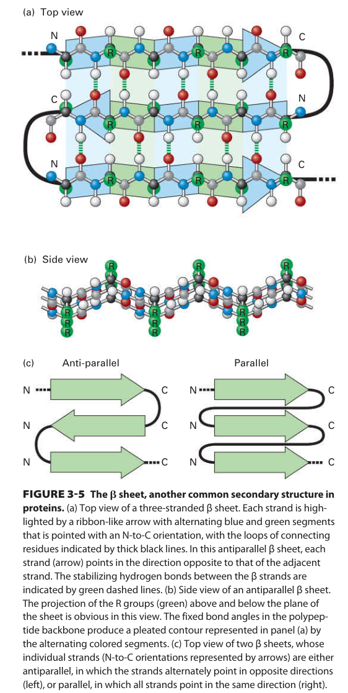
| (a) Top view | (a) 俯视图 |
| (b) Side view | (b) 侧视图 |
| Anti-parallel | 反平行 |
| Parallel | 平行 |
三级结构是多肽链的整体折叠
三级结构指一条多肽链的整体构象——即其所有氨基酸残基的三维排列。与仅由氢键稳定的二级结构不同，三级结构主要由非极性侧链之间的疏水相互作用稳定，加上
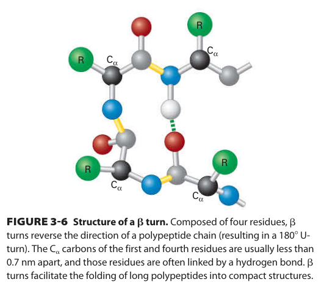
涉及极性侧链以及主链氨基和羧基的氢键。这些稳定力将二级结构元件——α 螺旋、β 链、转角和卷曲——维系在一起。然而，由于这些稳定相互作用往往较弱，蛋白质的三级结构并非刚性固定，而是不断发生微小波动，且三级结构内的某些片段可如此柔动以至于被视为无序——即缺乏明确、稳定的三维结构。这种结构上的变化对蛋白质的功能和调控具有重要影响。
氨基酸侧链的化学性质有助于定义三级结构。在某些蛋白质中——例如从细胞分泌的蛋白质或面向胞外环境的细胞表面蛋白——半胱氨酸残基侧链之间的二硫键可共价连接蛋白质的不同区域，从而限制蛋白质的柔韧性并增强其三级结构的稳定性。带电荷的亲水极性侧链氨基酸倾向于位于蛋白质外表面；通过与水相互作用，它们有助于使蛋白质在水溶液中可溶，并能与其他水溶性分子（包括其他蛋白质）形成非共价相互作用。相反，疏水性非极性侧链氨基酸通常被隔离在蛋白质面向水的一侧之外，在许多情况下形成不溶于水的中心核心。这一观察引出了所谓的蛋白质构象"油滴模型"，因为蛋白质的核心相对疏水，即"油性"的（图 3-7）。不带电荷的亲水极性侧链则既见于蛋白质表面，也见于内部核心。
蛋白质有四大宽泛的结构类别
蛋白质通常根据其三级结构归入四大宽泛类别之一：球状蛋白、纤维状蛋白、跨膜蛋白和本征无序
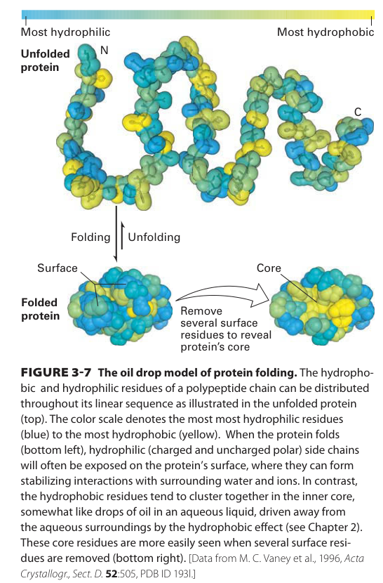
| Unfolded protein | 未折叠蛋白 |
| Folded protein | 折叠蛋白 |
| Most hydrophilic | 最亲水 |
| Most hydrophobic | 最疏水 |
| Core | 核心 |
| Surface | 表面 |
| Folding | 折叠 |
| Unfolding | 去折叠 |
蛋白。这四大类别并非互斥——有些蛋白质由落入两类或更多类的片段组合而成。球状蛋白通常水溶、折叠紧凑，常（但不 exclusively）呈球状，由多种二级结构混合构成[参见下文 ras（图 3-9）和肌红蛋白（图 3-14）的结构]。纤维状蛋白是大的、伸长的、常为坚硬的分子。有些纤维状蛋白由一条长多肽链组成，含许多串联重复的短氨基酸序列，形成单一重复的二级结构（参见哺乳动物中含量最丰富的蛋白质胶原蛋白的结构，图 20-25）。其他纤维状蛋白由重复的球状蛋白亚基组成，如 G-肌动蛋白单体螺旋排列形成 F-肌动蛋白微丝（见第 17 章）。纤维状蛋白常聚集成不易溶于水的大型多蛋白纤维，通常起结构作用或参与细胞运动。跨膜蛋白镶嵌在包围细胞和细胞器的膜的磷脂双层内，详见第 7 章。
本征无序蛋白与其他三类中结构有序的蛋白质有根本不同。我们在本书中考察的许多蛋白质，在其正常功能状态（称为天然态）下只采取一种或少数几种极其相似的构象。然而，本征无序蛋白在其天然、有功能的状态下没有良好有序的结构；相反，其多肽链非常柔韧——实为无序——没有固定构象。有时只有一条多肽链的一个片段（而非整链）是本征无序的。本征无序蛋白或蛋白质片段异常的构象柔韧性，似乎是它们发挥功能活性的关键，例如与多个伙伴蛋白相互作用的能力，或仅在结合这种伙伴后才折叠成明确构象的能力（图 3-8a）。
本征无序蛋白通常（但不 exclusively）充当信号分子、其他分子活性的调节因子，或作为多种蛋白质、小分子和离子的支架（例如通过多个带电荷残基结合离子）。本征无序区域可在蛋白质的有序区域之间提供柔性连接或系绳；作为某些类型翻译后蛋白质修饰的位点[例如共价添加磷酸基团（磷酸化）或糖（糖基化）]；作为调节蛋白质活性的蛋白酶消化的靶点；抑制其所在蛋白质的活性（自抑制位点）；或作为蛋白质胞内分选的信号（见第 13 章）。许多含本征无序片段的蛋白质的活性在后续章节中描述。例如，RNA 聚合酶 II（见图 8-12）无序 C 端结构域（CTD）的磷酸化，该结构域由含脯氨酸、苏氨酸和丝氨酸的七氨基酸序列的多次重复组成，调节 mRNA 合成中的关键步骤（见第 9、10 章）。控制染色质中 DNA 组织的组蛋白的 N 端（见第 8 章）是重要翻译后修饰的位点，而蛋白质 formin 中无序的、富含脯氨酸的 FH1 区域控制肌动蛋白丝的组装（见第 17 章）。
本征无序蛋白可通过多种生化技术实验鉴定，如对蛋白酶消化的敏感性测试（无序区域通常对蛋白酶更敏感），以及包括光谱学在内的多种生物物理技术。这些蛋白质的本征无序性显然是由于其序列相对于有序蛋白质，更富含极性氨基酸、脯氨酸和净电荷，而疏水残基较少（图 3-8b）。主要基于氨基酸组成计算——尤其是净电荷和疏水性——的算法，被用于预测哪些蛋白质或蛋白质片段是本征无序的。据某些估计，30% 或以上的真核蛋白质被预测含至少一个长度为 50 个或更多连续残基的无序片段。
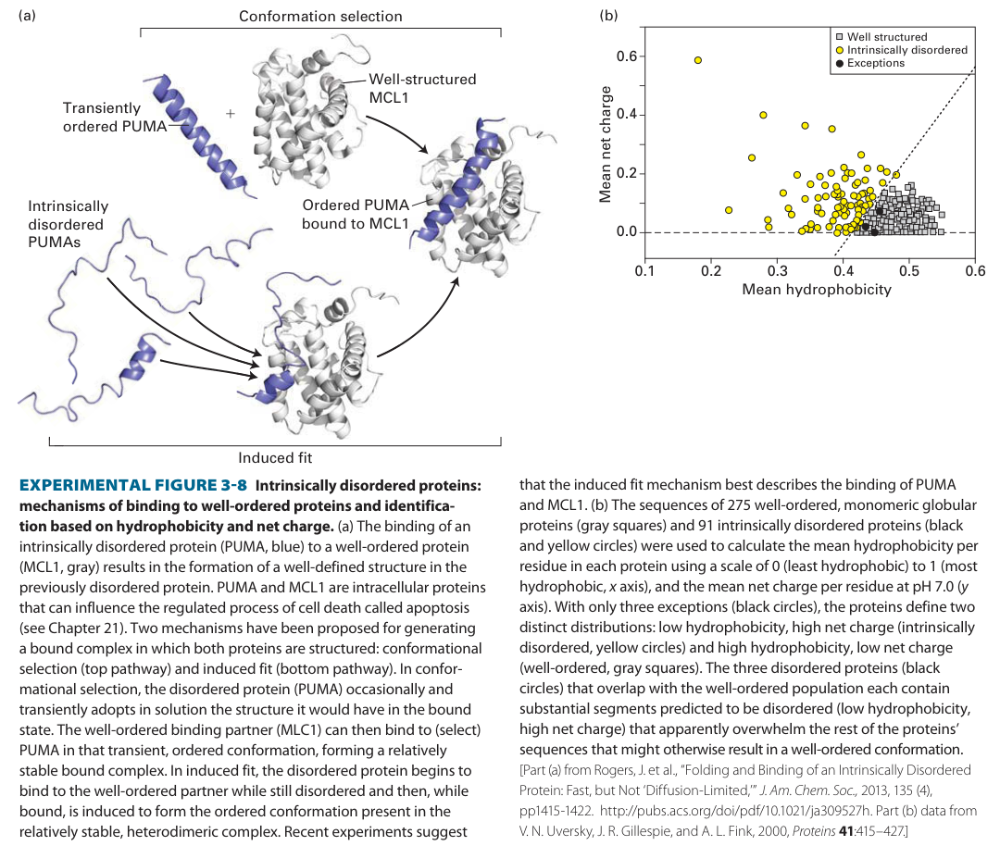
| Conformation selection | 构象选择 |
| Induced fit | 诱导契合 |
| Intrinsically disordered | 本征无序 |
| Transiently ordered | 短暂有序 |
| EXPERIMENTAL FIGURE | 实验性图 |
描绘蛋白质构象的不同方式传达不同类型的信息
表示蛋白质三维结构最简单的方法是用实线（称为 Cα 主链追踪）描绘主链原子的走向，有时仅描绘 Cα 原子（图 3-9a）；最复杂的表示称为球棍模型，显示每个原子（图 3-9b）。Cα 主链追踪展示多肽链的整体折叠而不考虑氨基酸侧链；球棍模型（球代表原子，棍代表键）详述侧链原子之间的相互作用，包括稳定蛋白质构象和与其他分子相互作用的那些，以及主链原子。尽管这两种视图都有用，但二级结构元件并不总能从中轻易辨别。另一种表示称为带状图，用常用简写符号描绘二级结构——例如
盘绕的丝带或实心圆柱代表 α 螺旋，扁平丝带或箭头代表 β 链，柔韧细丝代表 β 转角、卷曲和环（图 3-9c）。在基本带状图的变体中，全部或部分侧链的球棍模型或空间填充模型可附着于主链丝带上。这样，感兴趣的侧链可在丝带所特别清晰表示的二级结构背景中得以可视化。
然而，这三种表示蛋白质结构的方式都不能传达多少关于位于蛋白质表面、与水环境接触的原子的信息。表面之所以重要，是因为它是其他分子通常与蛋白质结合之处。因此，一种有用的替代表示方式是仅显示水可及表面，并用颜色突出具有共同化学特征的区域，如疏水性或亲水性，以及电荷特征，如正（碱性）或负（酸性）侧链（图 3-9d）。此类模型揭示蛋白质表面的形貌
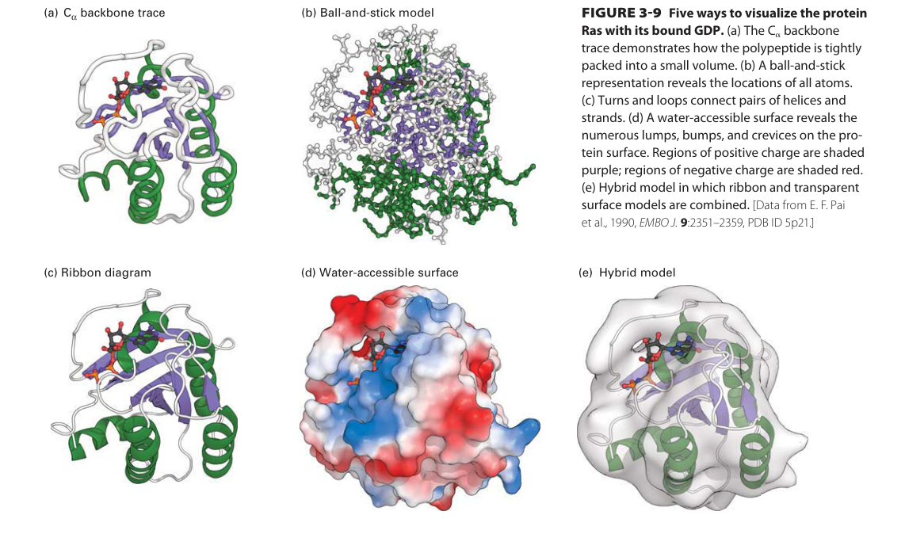
| (a) Cα backbone trace | (a) Cα主链追踪 |
| (b) Ball-and-stick model | (b) 球棍模型 |
| (c) Ribbon diagram | (c) 带状图 |
| (d) Water-accessible surface | (d) 水可及表面 |
| (e) Hybrid model | (e) 混合模型 |
和电荷分布，二者都是结合位点的重要特征，以及其他分子可能结合的表面裂隙。这种视图表示的是蛋白质被另一个分子所"看到"的样子。
结构基序是二级结构的规则组合
当两个或多个二级结构的特定组合在多种蛋白质中出现，并形成独特的三维结构时，称为结构基序。结构基序常（但不 always）与特定功能相关联。任何特定的结构基序常在不同蛋白质中执行共同功能，如结合特定离子或小分子——例如钙或 ATP。一些结构基序从蛋白质其余部分分离出来时是稳定的，因而被称为结构域（稍后将看到）。然而，另一些结构基序在没有蛋白质其他部分的情况下不形成热力学稳定的结构，因此不被视为独立的结构域。
一种常见的结构基序是基于 α 螺旋的卷曲螺旋，或称七联重复。许多蛋白质，包括纤维状蛋白和称为转录因子的 DNA 调节蛋白（见第 9 章），利用卷曲螺旋基序组装成二聚体或三聚体，其中来自两条、三条甚至四条不同多肽链的 α 螺旋彼此缠绕——结果是螺旋的螺旋；故得此名（图 3-10a）。各条螺旋紧密结合在
一起，因为每条螺旋沿其一侧有一条脂肪族（疏水但非芳香族）侧链（亮氨酸、缬氨酸等）的条带，与相邻螺旋中类似的条带相互作用，从而将疏水基团隔离于水之外，稳定多条独立螺旋的组装。这些疏水条带仅沿螺旋一侧产生，是因为每条螺旋的一级结构由重复的七氨基酸单元（称为七联体）组成，其中第 1 和第 4 位残基的侧链是脂肪族的，其他侧链常是亲水的（见图 3-10a）。由于亲水侧链从螺旋一侧伸出，疏水侧链从相反一侧伸出，整体螺旋结构是两亲性的。由于亮氨酸频繁出现在第 4 位，且疏水侧链像拉链的齿一样汇合，这些结构基序也被称为亮氨酸拉链。
许多其他结构基序含有 α 螺旋。一种常见的钙结合基序称为 EF 手，由一个环连接的两条短螺旋组成（图 3-10b）。这种结构基序——若干螺旋-转角-螺旋和螺旋-环-螺旋结构基序之一——存在于上百种蛋白质中，用于感知钙水平。Ca²⁺ 离子与环中保守残基的氧原子结合，取决于细胞内 Ca²⁺ 的浓度，有时会诱导蛋白质构象变化，改变其活性。因此钙浓度可直接控制蛋白质的结构和功能。略有不同的螺旋-转角-螺旋和碱性螺旋-环-螺旋
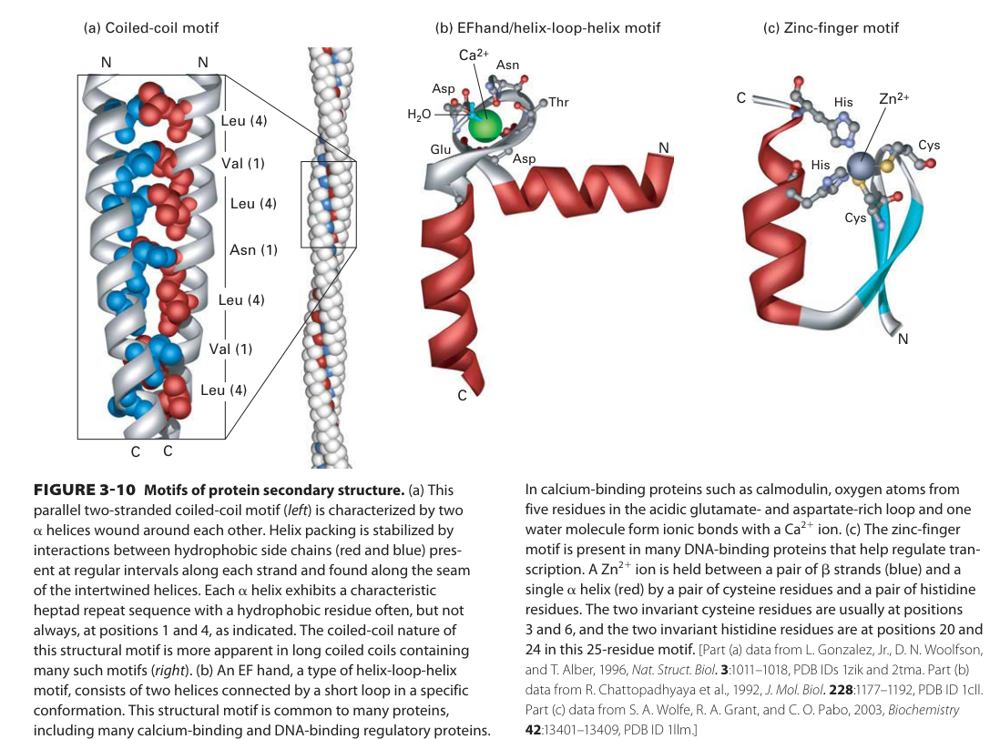
| Coiled-coil motif | 卷曲螺旋基序 |
| left parallel two-stranded | 左手平行双链 |
| heptad repeat | 七联重复 |
| EF hand/helix-loop-helix motif | EF手/螺旋-环-螺旋基序 |
| calcium-binding | 钙结合 |
| zinc-finger motif | 锌指基序 |
| Leu | 亮氨酸 |
| Val | 缬氨酸 |
| Asn | 天冬酰胺 |
（bHLH）结构基序用于蛋白质与 DNA 的结合，进而用于基因活性的调节（见第 9 章）。另一种常见于结合 RNA 或 DNA 的蛋白质中的结构基序是锌指，它含三种二级结构——一条 α 螺旋和两条反平行取向的 β 链——形成一个由锌离子维系的手指状束（图 3-10c）。
多肽链的一级结构与其折叠成的结构基序之间的关系并不总是直接的。不同蛋白质中负责任何给定结构基序的氨基酸序列可能彼此非常相似。换言之，共同的序列基序可导致共同的结构基序。形成卷曲螺旋的七联重复即是如此。然而，看似不相关的氨基酸序列也可能折叠成共同的结构基序，因此并不总能预测哪些氨基酸序列会折叠成给定结构基序。反过来，一个常见的序列基序也可能不折叠成明确的结构基序。有时某种氨基酸异常丰富的短序列基序（如富含脯氨酸或天冬氨酸或谷氨酸）被称为"结构域"；然而，这些
以及其他短的连续片段更适合称为"序列基序"而非"结构域"，因为后一术语有我们将稍后定义的特定含义。
我们在本章及其他章节对蛋白质的讨论中将遇到更多基序。相同结构基序出现在具有相似功能的不同蛋白质中，清楚地表明这些有用的二级结构组合在进化中被保留下来。
结构域是三级结构的模块
蛋白质结构的不同区域常被称为结构域。蛋白质结构域有三大类：功能性、结构性和拓扑性。功能性结构域是蛋白质中展现该蛋白质特有活性的区域，通常即使从蛋白质其余部分分离出来也如此。例如，蛋白质的某一区域可能负责其催化活性（如将磷酸基团共价添加到另一分子上的激酶结构域）或结合能力（如 DNA 结合结构域或膜结合结构域）。功能性结构域常通过用蛋白酶将蛋白质削减为其最小活性片段来实验鉴定，
蛋白酶是切割靶多肽中一个或多个肽键的酶。或者，可修改编码蛋白质的 DNA，使得用该修饰 DNA 生成蛋白质时，只产生全长蛋白质的某一特定区域或结构域。因此，可以确定蛋白质的特定部分是否负责该蛋白质所表现的特定活性。事实上，功能性结构域也常与相应的结构性结构域相关联。
结构性结构域是长约 40 个或以上氨基酸的区域，排列成单一、稳定且独特的结构，常包含一个或多个二级结构。许多结构性结构域能独立于其所在蛋白质的其余部分折叠成其特征结构。结果是，不同的结构性结构域可被连接——有时由短或长的间隔区连接——形成大的多结构域蛋白质。例如，三聚体流感病毒血凝素的每条多肽链含一个球状结构域和一个纤维状结构域（图 3-11a）。结构性结构域可作为模块掺入不同蛋白质。蛋白质建筑学的模块化方式在大型蛋白质中尤为易辨，它们往往是不同结构域的镶嵌体，这些结构域赋予不同活性，从而能同时执行不同功能。多达 75% 的真核蛋白质具有多个结构性结构域。结构性结构域常同时也是功能性结构域，因为它们可具有独立于蛋白质其余部分的活性。
表皮生长因子（EGF）结构域是一种存在于多种蛋白质中的结构性结构域（图 3-12）。EGF
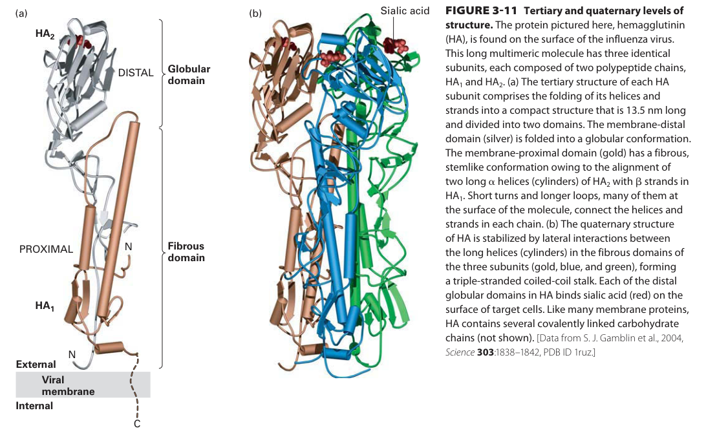
| Globular domain | 球状结构域 |
| Fibrous domain | 纤维状结构域 |
| PROXIMAL domain | 近侧结构域 |
| DISTAL | 远侧 |
| Viral membrane | 病毒膜 |
| External | 外侧 |
| Internal | 内侧 |
| Sialic acid | 唾液酸 |
是一种小的可溶性肽类激素，与胚胎细胞以及成体皮肤和结缔组织中的细胞结合，使之分裂。它由 EGF 前体蛋白中 EGF 结构域之间的蛋白水解切割（断开肽键）产生，前体蛋白通过一个跨膜结构域锚定在质膜上。与 EGF 肽类激素序列相似但不完全相同的 EGF 结构域存在于其他蛋白质中，并可通过蛋白水解释放。这些蛋白质包括组织型纤溶酶原激活剂（TPA）——一种用于溶解
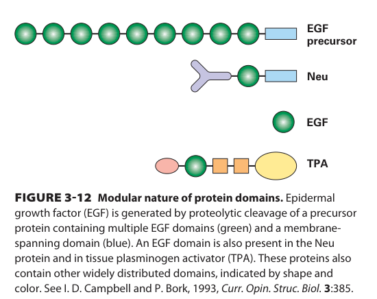
| EGF | 表皮生长因子 |
| EGF precursor | EGF前体 |
| Neu | Neu蛋白 |
| TPA | 组织型纤溶酶原激活剂 |
| Modular nature | 模块性 |
心脏病患者血栓的蛋白酶；Neu 蛋白——参与胚胎分化；以及 Notch 蛋白——一种在发育中重要信号传导中起作用的质膜受体蛋白（见第 16 章）。除 EGF 结构域外，这些蛋白质还与其他蛋白质共有其他结构域。例如，TPA 具有胰蛋白酶结构域，这是一种见于某些蛋白酶中的功能性结构域。据估计，所有蛋白质中约有 1000 种不同类型的结构性结构域。其中一些并不常见，而另一些见于许多不同蛋白质。事实上，据某些估计，仅 9 种主要类型的结构性结构域就占了所有蛋白质中结构域总数的三分之一。结构性结构域可通过 X 射线晶体学或核磁共振（NMR）分析测定结构的蛋白质，或电子显微镜捕获的图像来识别。
由与蛋白质其余部分的独特空间关系所定义的区域是拓扑结构域。例如，一些与细胞表面膜相关的蛋白质有向内伸入细胞质的部分（胞质结构域）、嵌入磷脂双层的部分（跨膜结构域）和向外伸入胞外空间的部分（胞外结构域）。这些部分中的每一个都可包含一个或多个结构性和功能性结构域。
在第 8 章中，我们将考虑对应于结构域的基因片段在进化过程中如何被打乱，导致其出现在许多蛋白质中。一旦在一种蛋白质中鉴定并表征了某个功能性、结构性或拓扑性结构域，就可用该信息在其他蛋白质中搜索类似结构域，并推测这些结构域在那些蛋白质中的潜在相似功能。
多条多肽组装成四级结构和超分子复合物
多聚体蛋白质由两条或多条多肽链组成，在此语境下称为亚基。第四级结构组织——四级结构——描述多聚体蛋白质中亚基的数目（化学计量）和相对位置（图 3-2）。例如，流感病毒血凝素是三个相同亚基（同源三聚体）通过非共价键结合而成的三聚体（图 3-11b）。其他多聚体蛋白质由数目不同的相同（同聚体）或不同（异聚体）亚基组成。血液中运氧的血红蛋白是异聚体多聚体蛋白的例子，它有两种不同多肽链各两份拷贝（如下文所述）。在许多情况下，多聚体蛋白质的单体亚基除非组装成多聚体蛋白质，否则无法正常发挥功能。在其他情况下，组装成多聚体蛋白质使在通路中依次作用的蛋白质得以因空间上的并置而提高运作效率，这种现象称为代谢偶联。代谢偶联的经典例子是脂肪酸合酶（真菌中合成脂肪酸的酶）和聚酮合酶（细菌中合成包括抗生素红霉素在内的多种药理相关分子聚酮的大型多蛋白复合物）。
蛋白质结构层级中的最高层次是蛋白质缔合成超分子复合物。通常，此类结构非常大，某些情况下质量超过 1 兆道尔顿（MDa），大小接近 30–300 nm，含数十至数百条多肽链，有时还含其他生物聚合物如核酸。包裹病毒基因组核酸的衣壳是具结构功能的超分子复合物的例子。支撑并赋予质膜形状的细胞骨架丝束是另一个例子。其他超分子复合物作为分子机器，通过将多种各具独特功能的蛋白质整合到一个大型组装体中，执行最复杂的细胞过程。例如，转录机器负责以 DNA 为模板合成信使 RNA（mRNA）。这种转录
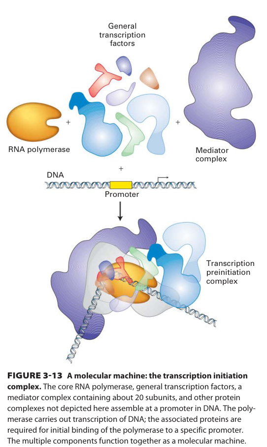
| General transcription factors | 通用转录因子 |
| Transcription preinitiation complex | 转录预起始复合物 |
| Mediator complex | 中介体复合物 |
| RNA polymerase | RNA聚合酶 |
| Promoter | 启动子 |
机器（其运作细节在第 5 章和第 9 章讨论）由 RNA 聚合酶（本身是多聚体蛋白）和至少 50 种其他组分组成，包括通用转录因子、启动子结合蛋白、解旋酶及其他蛋白质复合物（图 3-13）。核糖体（也在第 5 章讨论）是合成蛋白质的复杂多蛋白和多数酸机器。最复杂的组装体之一是核孔，一种允许大分子在细胞核与细胞质之间通讯和通过的结构（见第 14 章）。它由约 30 种不同蛋白质的多个拷贝组成，形成估计质量为 50 MDa 的组装体。上述脂肪酸合酶和聚酮合酶也是分子机器。
比较蛋白质序列和结构可洞察蛋白质功能与进化
对多种不同蛋白质的分析已确凿地建立了蛋白质的氨基酸序列、三维结构和功能之间的关系。最早的例子之一涉及两种运氧蛋白的比较：肌肉中的肌红蛋白和红细胞中的血红蛋白。肌红蛋白——一种单体（由一条多肽链/一个蛋白质分子组成）——和血红蛋白——一种
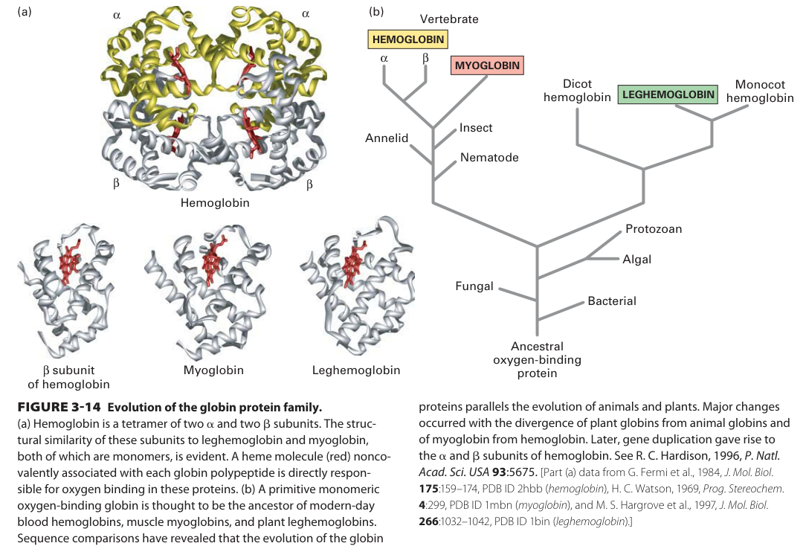
| Hemoglobin | 血红蛋白 |
| Myoglobin | 肌红蛋白 |
| LEGHEMOGLOBIN | 豆血红蛋白 |
| Ancestral oxygen-binding | 祖先运氧 |
| Vertebrate | 脊椎动物 |
| Insect | 昆虫 |
| Annelid | 环节动物 |
| Nematode | 线虫 |
| Fungal | 真菌 |
| Dicot | 双子叶植物 |
| Monocot | 单子叶植物 |
四聚体（由每个蛋白质两条 α 和两条 β 多肽即亚基组成）——都含非共价附着于每条多肽链的血红素基团（图 3-14a）。血红素基团结合氧。血红蛋白 β 链编码基因的一个突变导致谷氨酸被缬氨酸取代，扰乱了该蛋白质的折叠和功能，引起镰状细胞病（也称镰状细胞贫血）。141 个残基的肌红蛋白与 153 个残基的血红蛋白 β 亚基正确对齐的序列中，有 40 个残基在等价位置相同，另有 21 个具有化学上非常相似的侧链。这种高度的同一性和相似性（占肌红蛋白残基的 43%）与它们相似的运氧功能相符。X 射线晶体学分析表明，肌红蛋白以及血红蛋白 α 和 β 亚基的三维结构，以及进化上遥远的植物运氧蛋白豆血红蛋白的结构，都极为相似（见图 3-14a）。
一条好的经验法则是：两条多肽链的序列相似性越高，它们就越可能具有相似的三维结构和相似的功能。虽然这种比较方法非常有用，但仅基于氨基酸序列相似性就将一种蛋白质或蛋白质某部分的功能或结构归因于另一种蛋白质时，必须始终谨慎。
存在整体结构相似但功能不同的蛋白质的例子，也存在功能无关、氨基酸序列不同却具有非常相似折叠三级结构的蛋白质的情况（如下文所述）。尽管如此，在许多情况下，此类序列比较为蛋白质结构和功能提供了重要洞察。
随着越来越多生物的基因组和信使 RNA 被测序，使大量蛋白质序列得以推断，利用序列比较来推导蛋白质结构和功能近年来大幅扩展。事实上，20 世纪末几十年生物学中的分子革命，建立了一种基于蛋白质氨基酸序列相似性和差异的新的生物分类方案。具有共同祖先的蛋白质称为同源蛋白。蛋白质间同源性——因而其共同祖先——的主要证据是序列相似性，这常反映在相似的结构中。我们可将同源蛋白质描述为属于一个"家族"，并从其序列比较中追溯它们的谱系——即在进化意义上彼此亲缘的远近。一般而言，亲缘较近的蛋白质比较远的蛋白质表现出更大的序列相似性，因为随着进化时间推移，编码这些蛋白质的基因中会积累突变。同源蛋白质的折叠三维结构可能相似，即使其一级结构的某些部分几乎没有序列同源性证据。最初，序列相似性相对较高（>50% 氨基酸精确匹配，或"同一性"）且功能或结构相关的蛋白质被定义为进化上相关的家族，而超家族包含家族间序列匹配不如一个家族内部（约 30–40% 同一性）的两个或多个家族。一般认为具有约 30% 序列同一性的蛋白质可能具有相似的三维结构；然而，蛋白质共享相似结构并不需要如此高的序列同一性。已有人提出修订的家族和超家族定义：家族包含有明确进化关系（>30% 同一性，或显示共同起源但 <30% 同一性的其他结构和功能信息）的蛋白质，而超家族包含仅有可能的共同进化起源的蛋白质——例如，序列同一性较低但有一个或多个共有基序或结构域。
同源蛋白质之间的亲缘关系最容易用基于序列分析的树状图来可视化。例如，珠蛋白——血红蛋白和肌红蛋白及其来自细菌、植物和动物的近缘蛋白——的氨基酸序列表明，它们由一种祖先单体运氧蛋白进化而来（图 3-14b）。随着时间推移，该祖先蛋白的基因缓慢变化，最初分化为通向动物珠蛋白和植物珠蛋白的谱系。随后的变化产生了肌红蛋白以及脊椎动物循环系统中四聚体血红蛋白分子（α₂β₂）的 α 和 β 亚基。
第 3.1 节关键概念
蛋白质的层级结构
● 蛋白质是由肽键连接的氨基酸线性多聚物。一种蛋白质可含单条多肽链或多条多肽链。多肽链的一级结构是组成该链的共价连接氨基酸序列。线性序列中氨基酸之间的各种相互作用（大多为非共价）稳定了蛋白质特定的折叠三维结构，即构象。
● α 螺旋、β 链和 β 折叠以及 β 转角是蛋白质二级结构最普遍的元件。二级结构由肽主链原子间的氢键稳定（见图 3-4–3-6）。
● 蛋白质三级结构源自非极性侧基之间的疏水相互作用，以及涉及极性侧基和多肽主链的氢键和离子相互作用。这些相互作用稳定了蛋白质（包括其二级结构元件）折叠成整体三维排列。
● 整个蛋白质或蛋白质片段通常落入四大结构类别之一：球状蛋白、纤维状蛋白、跨膜蛋白和本征无序蛋白。
● 本征无序蛋白异常的构象柔韧性，使其能作为结合伙伴、信号分子、其他分子的调节因子、支架、蛋白质有序区域间的柔性连接、翻译后修饰位点、自抑制剂以及胞内蛋白质分选信号而发挥作用。
● 某些二级结构的组合产生结构基序，见于多种蛋白质，常与特定功能相关（见图 3-10）。
● 蛋白质常含独特的结构域——具有特征结构性、功能性及/或拓扑性、可独立折叠的区域。
● 进化过程中结构域作为模块掺入不同蛋白质，产生了蛋白质结构和功能的多样性。
● 多聚体蛋白质中各多肽亚基的数目和组织定义了其四级结构。
● 细胞含大型超分子组装体，有时称为分子机器，其中复杂细胞过程（如 DNA、RNA 和蛋白质合成；光合作用；信号转导）的所有必要参与者都结合在一起。
● 氨基酸序列相似的蛋白质通常可假定具有相似的三维结构和相似的功能。也存在序列不同却折叠成相似三维结构的多肽链的例子。
● 同源蛋白质是从共同祖先进化而来、因而具有相似序列、结构和功能的蛋白质。它们可分为家族和超家族。
3.2 蛋白质折叠
如上所述，在蛋白质的建筑学中，"形式追随功能"。因此，多肽必须以正确的氨基酸序列合成，并折叠成正确的三维构象，具备适当的二级、三级乃至四级结构，才能在细胞内外发挥其生物学作用。具有正确序列的蛋白质是如何生成的？多肽链通过一个称为翻译的复杂过程合成，该过程发生在细胞质中一个称为核糖体的大型蛋白质-核酸复合物上。翻译过程中，信使 RNA（mRNA）的序列作为装配相应氨基酸序列的模板。mRNA 最初由一个称为转录的过程产生，借此 DNA 中的核苷酸序列被细胞核内的转录机器转化为 mRNA 序列。转录和翻译的复杂细节在第 5 章讨论。此处我们描述新生多肽链从核糖体出来时正确折叠的关键决定因素。
平面肽键限制蛋白质可折叠的形状
多肽一个限制链如何折叠的关键结构特征是肽键的平面结构。图 3-3 展示了多肽链中肽键的酰胺基。由于肽键本身表现得有点像平面双键（中和右），
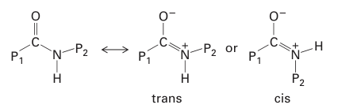
肽键两侧的多肽链部分（P1 和 P2）可相对于肽键取反式（中）或顺式（右）构型。我们在第 2 章见过不饱和脂肪酸中碳-碳双键的类似顺式和反式异构体。晶体结构分析表明，在蛋白质中，P2 位置为非脯氨酸残基的肽键约 99.97% 处于反式构型。（我们将稍后考虑 P2 为脯氨酸的情况。）在肽键中，羰基碳、酰胺氮及直接与它们键合的原子都必须位于一个固定平面内（图 3-15）；肽键本身几乎不能旋转。因此，多肽链中唯一的灵活性--使其能扭曲转向从而折叠成不同三维
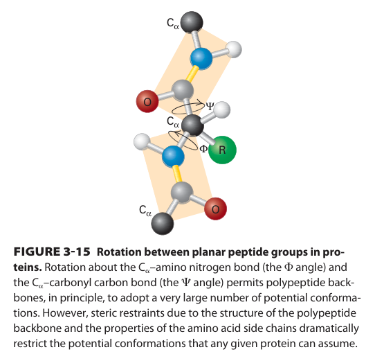
| Φ | Φ角 |
| Ψ | Ψ角 |
形状的--是相邻肽键的固定平面彼此间绕两个键的旋转：Cα-氨基氮键（旋转角称为 Φ）和 Cα-羰基碳键（旋转角称为 Ψ）。
然而，多肽链可采取的潜在构象还受到进一步约束：只有有限数目的 Φ 和 Ψ 角是可能的，因为对大多数 Φ 和 Ψ 角而言，主链或侧链原子会彼此过于靠近，从而相应的构象要么高度不稳定，要么在物理上根本无法实现。
蛋白质的氨基酸序列决定其折叠方式
虽然主链键角的约束看似非常严格，但任何仅含少数残基的多肽链原则上仍可折叠成许多构象。例如，若 Φ 和 Ψ 角仅限于 8 种组合，一条 n 个残基长的肽将可能有 8ⁿ 种构象；即便对于仅 10 个残基的小多肽，那也有约 860 万种可能构象！然而一般而言，任何特定的非本征无序蛋白质的天然态只采取一种或少数几种极其相似的构象；对绝大多数此类蛋白质，天然态是分子稳定折叠的形式，也是使其能正常发挥功能的形式。用热力学术语说，天然态通常是自由能（G）最低的构象（见第 2 章）。
天然有序蛋白质的哪些特征将其折叠从如此多的潜在构象限制到仅一种或少数几种？侧链的性质（如大小、疏水性、形成氢键和离子键的能力）连同它们在多肽主链上的特定序列，施加了关键限制。例如，大的侧链（如色氨酸的侧链）可能在空间上阻挡链的某一区域与另一区域紧密堆叠，而带正电荷的侧链（如精氨酸的侧链）可能吸引具有互补负电荷侧链的多肽片段（如天冬氨酸）。我们已经讨论过的另一个例子是七联重复中脂肪族侧链在促进螺旋缔合及随之形成卷曲螺旋中的作用。因此，多肽的一级结构决定了其二级、三级和四级结构。
蛋白质正确折叠所需信息编码在其氨基酸序列中的最初证据，来自体外（试管中）对纯化蛋白质复性的研究，尤其是 20 世纪 60 年代 Christian Anfinsen 对核糖核酸酶 A（一种切割 RNA 的酶）复性研究的诺贝尔奖获奖工作。此前他人已表明，各种化学和物理扰动可破坏稳定蛋白质天然构象的弱非共价相互作用，导致其正常三级结构丧失。蛋白质结构的破坏（可包括二级和三级结构）称为变性。变性可由热带来的热能、改变氨基酸侧链电荷的极端 pH、或暴露于 6–8 M 浓度的尿素或盐酸胍等变性剂所诱导，所有这些都破坏稳定结构的非共价相互作用。用还原剂（如 β-巯基乙醇）处理以断裂二硫键，可进一步破坏含二硫键蛋白质的稳定性。在变性条件下，一群均匀折叠的蛋白质分子被破坏，转化为许多未折叠或变性分子的集合，这些分子具有许多不同的非天然且无生物活性的构象。如我们所见，存在大量可能的非天然构象（如 8ⁿ⁻¹）。蛋白质中可见两大类非天然构象：(1) 单体未折叠或变性结构，(2) 聚集体，可为无定形或具有良好组织的结构，如本章稍后描述的与疾病相关的淀粉样纤维。原则上，聚集体可由单一蛋白质的多个拷贝组成（同质聚集体），或含多种不同蛋白质的混合（异质聚集体）。
在变性条件下蛋白质的自发展开并不令人惊讶，因为变性蛋白可采取许多非天然构象（无序度增加），熵显著增加。然而引人注目的是，当试管中单一类型未折叠蛋白的纯样品被非常小心地转回正常条件（体温、正常 pH、降低变性剂浓度）时，某些变性多肽能自发复性为其天然的有生物活性的状态，如 Anfinsen 的实验所示。这类复性实验，以及表明化学合成的蛋白质能正确折叠的研究，确立了蛋白质一级结构所含信息足以指导正确复性。新合成的蛋白质似乎正如变性蛋白质那样
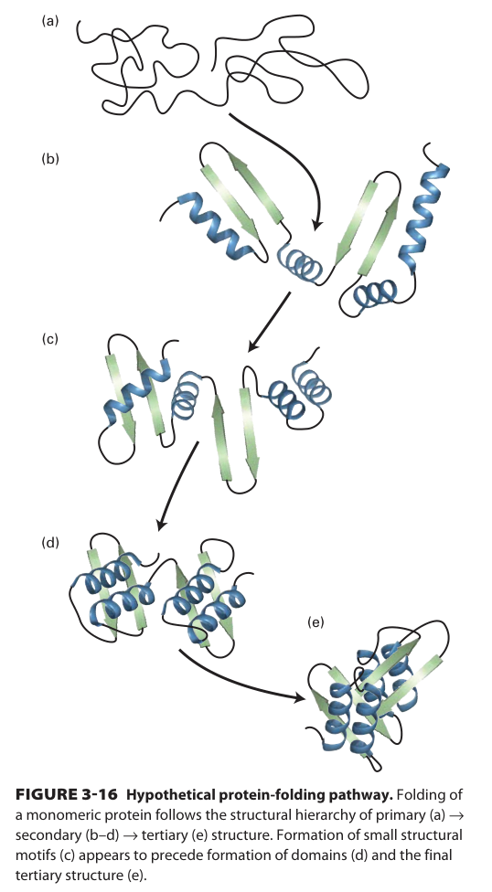
| (a) | (a) 一级 |
| (b) | (b) 二级 |
| (c) | (c) 基序 |
| (d) | (d) 结构域 |
| (e) | (e) 三级 |
折叠成其正确构象。在 3.1 节中提到的、具有相似氨基酸序列的蛋白质在折叠三维结构上的相似性，提供了额外证据表明一级序列也决定体内（活体生物中）的蛋白质折叠。看来，二级结构和结构基序的形成发生在折叠过程早期，随后是更复杂结构性结构域的装配，它们再缔合成更复杂的三级和四级结构（图 3-16）。
体内蛋白质折叠由分子伴侣促进
纯化的变性蛋白质在试管中复性的条件，与新生多肽在细胞中折叠的条件截然不同。其他生物分子的存在--其中一些本身也是新生并处于折叠过程中--可能通过形成聚集体来干扰原本天然有序蛋白质的自发折叠。某些蛋白质的胞质浓度非常高，哺乳动物细胞中总胞质蛋白浓度可达约 300 mg/ml。这些高蛋白浓度通过增加新生蛋白在完成折叠前遇到其他蛋白质的机会而有利于聚集体形成。未折叠和部分折叠的蛋白质倾向于聚集成大的、常不溶于水的团块，蛋白质极难从中解离再折叠成正确构象。部分地，这种聚集是由于尚未有机会被埋入折叠蛋白质内核的疏水侧链的暴露。不同分子上暴露的疏水侧链会因疏水效应（见第 2 章）而相互粘附，从而促进聚集。这种聚集的风险对新合成、尚未完成正确折叠的蛋白质尤为高。本征无序蛋白形成聚集体的可能性要小得多，因为至少在某些情况下，它们能介导此类聚集的疏水侧链相对较少。尽管蛋白质折叠成有序天然态可在体外发生，但由于蛋白质可能折叠进入的潜在错误中间构象数目庞大，这并不能及时地对所有未折叠分子发生。
鉴于这些障碍，细胞需要比仅靠序列提供的更快、更高效的机制，将天然有序蛋白质折叠成正确形状。没有这种帮助，细胞可能在合成错误折叠、无功能的蛋白质上浪费大量能量，而这些蛋白质将不得不被破坏以防止其扰乱细胞功能。细胞显然拥有此类机制，因为已表明细胞内 95% 以上的蛋白质处于其天然构象。不能或无法正确折叠的蛋白质--例如由改变氨基酸序列的突变基因所编码的--常被识别为未折叠并被酶迅速降解（水解）。细胞在促进正确蛋白质折叠方面惊人效率的解释是：细胞制造一组称为分子伴侣的蛋白质，它们促进新生蛋白质的正确折叠。分子伴侣促进正确折叠的一种方式是，通过结合靶多肽或将其与其他部分或完全未折叠的蛋白质隔离来防止聚集，从而给新生蛋白质时间正确折叠。许多分子伴侣在进化上保守，这一观察突显了它们的重要性。分子伴侣见于从细菌到人类的所有生物，其中一些是具有高序列相似性的同源蛋白，使用几乎相同的机制协助蛋白质折叠。
分子伴侣能将新合成的蛋白质折叠成有功能的构象，将错误折叠或未折叠的蛋白质重折叠成有功能的构象，解聚因错误折叠而形成的潜在毒性蛋白质聚集体，装配和拆解大型多蛋白复合物，并介导某些蛋白质在非活性与活性形式之间的转换。分子伴侣在真核细胞中位于每个细胞区和细胞器内，它们结合将要协助折叠的靶蛋白--也称底物或客户蛋白。分子伴侣使用 ATP 结合、ATP 水解为 ADP、以及新 ATP 分子交换 ADP 的循环，来诱导一系列对其功能至关重要的构象变化。有几类不同结构、各异的分子伴侣，都以各种方式使用 ATP 结合和水解，包括 (1) 增强靶蛋白的结合，(2) 切换自身构象。这种依赖 ATP 的构象切换用于 (1) 优化折叠，(2) 使分子伴侣回到初始状态以便帮助折叠另一个分子，(3) 设定允许复性的时间，这可由 ATP 水解速率决定。
已鉴定出两大类分子伴侣：
● 分子伴侣，结合蛋白质底物的一个短片段，稳定未折叠或部分折叠的蛋白质，从而防止这些蛋白质聚集和被降解。
● 伴侣蛋白，形成折叠腔，未折叠蛋白的全部或部分可被隔离于其中，给予它时间和适当环境以正确折叠。
分子伴侣 细胞质中的热激蛋白 Hsp70 及其同源物（线粒体基质中的 Hsp70、内质网中的 BiP、细菌中的 DnaK）是分子伴侣。它们最初因细胞受热激应激后迅速出现而被鉴定（Hsp 代表"热激蛋白"）。Hsp70 及其同源物是所有生物中使用依赖 ATP 的循环来折叠底物的主要分子伴侣（图 3-17a）。结合 ATP 时，单体 Hsp70 蛋白采取开放构象，其中暴露的疏水底物结合口袋瞬时结合未完全折叠或部分变性靶蛋白的暴露疏水区域，然后只要 ATP 结合着就迅速释放此底物（图 3-17a 步骤 1）。结合的 ATP 的水解使分子伴侣采取闭合形式，更紧密地结合其底物蛋白，这种更紧密的结合似乎促进靶蛋白折叠，部分是通过防止它与其他未折叠蛋白聚集（图 3-17a 步骤 2）。接着 ATP 交换伴侣结合的 ADP（步骤 3）引起伴侣构象变化，释放靶蛋白并再生一个"空的"、结合 ATP 的 Hsp70，准备帮助折叠另一个蛋白质（步骤 4）。如果靶蛋白现已正确折叠，它无法再结合 Hsp70。如果它仍至少部分未折叠，可再次结合以给伴侣另一次帮助其正确折叠的机会。如本章稍后所见，多种蛋白质使用三核苷酸水解为二核苷酸、随后二核苷酸/三核苷酸交换的循环来控制其活性。本章稍后，我们将讨论一组称为 GTP 酶的蛋白质，它们依赖 GTP（而非 ATP）交换结合的 GDP（而非 ADP）来诱导构象变化，这些变化极大影响蛋白质的活性，以及随后结合 GTP 水解为 GDP。
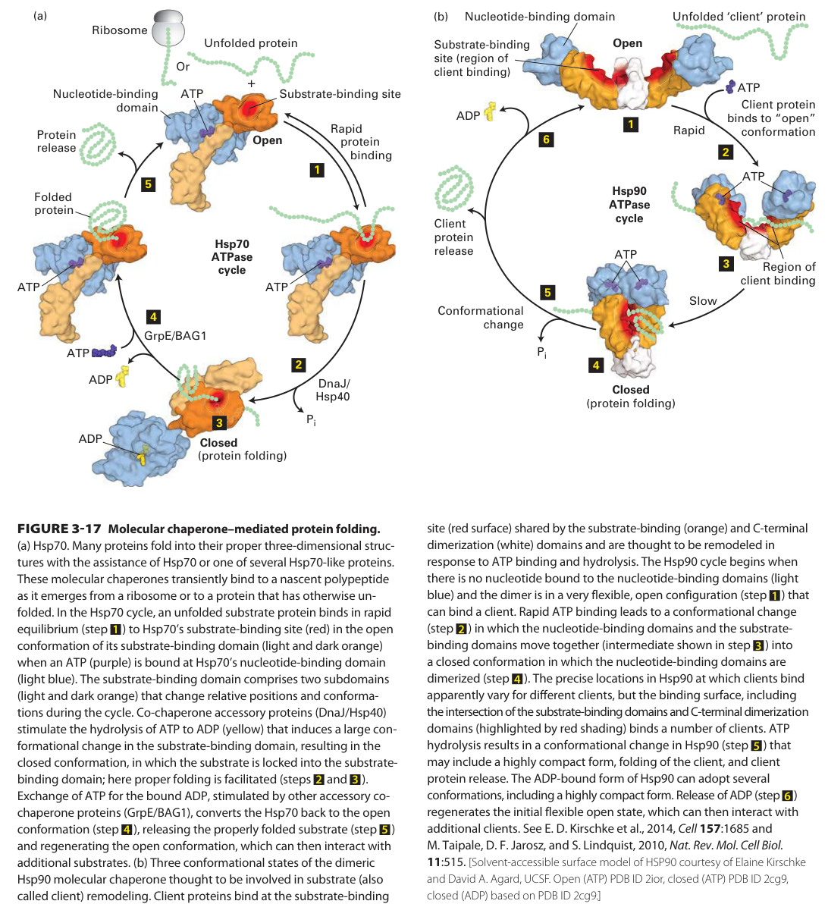
| Hsp70 | Hsp70 |
| Hsp90 | Hsp90 |
| substrate-binding domain | 底物结合域 |
| co-chaperone | 共伴侣 |
| nucleotide exchange factor | 核苷酸交换因子 |
| client | 客户蛋白 |
额外的蛋白质，如真核生物中的共伴侣 Hsp40（细菌中的 DnaJ），不仅通过刺激底物结合，还通过将 ATP 水解速率提高 100 至 1000 倍，帮助提高许多蛋白质 Hsp70 介导折叠的效率（见图 3-17a 步骤 2）。四个不同家族的核苷酸交换因子成员（如细菌中的 GrpE；真核生物中的 BAG、HspBP 和 Hsp110）也与 Hsp70（或 DnaK）相互作用，促进 ATP 交换 ADP（见步骤 3）。据认为，多个分子伴侣在所有新生多肽链于核糖体上合成时与之结合。在细菌中，85% 的蛋白质从其分子伴侣释放并正常折叠；真核生物中更高比例的蛋白质遵循此途径。
Hsp70 蛋白家族并非唯一的分子伴侣类别。另一类不同的分子伴侣是 Hsp90 家族，其成员通常识别部分折叠的底物蛋白。进化上相关的 Hsp90 家族成员存在于除古菌外的所有生物中。其强进化保守性见于大肠杆菌 Hsp90 与人 Hsp90 之间 55% 的高氨基酸序列相似性。在大多数真核生物中，有四种不同的 Hsp90，其中两种在细胞质中（占总蛋白的 1–2%，Hsp90 是最丰富的胞质蛋白之一），内质网和线粒体各一种。尽管 Hsp90 伴侣的蛋白质底物范围不如某些其他伴侣广泛（至少 10% 的酵母蛋白质被认为是 Hsp90 底物），但 Hsp90 在真核生物中是必需的。Hsp90 帮助细胞应对应激（如热激）产生的变性蛋白，并确保其某些底物（通常称为"客户"）能从非活性转为活性状态或以其他方式保持有功能构象。在某些情况下，Hsp90 与客户形成相对稳定的复合物，直到适当信号导致其与客户解离，释放客户以在细胞中执行某种受调控功能。Hsp90 客户包括转录因子，如类固醇激素雌激素和睾酮的受体。这些类固醇受体通过控制许多基因的活性来调节性发育和功能（见第 9 章）。另一类 Hsp90 客户是称为激酶的酶，它们通过磷酸化控制许多蛋白质的活性（见第 15、16 章）。
与单体 Hsp70 不同，Hsp90 以二聚体发挥作用，在一个循环中，ATP 结合、水解和 ADP 释放与重大构象变化以及客户的结合、折叠或激活和释放相偶联（图 3-17b）。尽管 Hsp90 的机制仍有许多待了解，但清楚的是：客户在伴侣处于"开放"构象时结合到底物结合结构域（图 3-17b 步骤 1），ATP 结合导致 ATP 结合结构域相互作用并形成"闭合"构象（步骤 1 和 2），ATP 水解在某些客户蛋白的激活及其随后从 Hsp90 释放中起重要作用（步骤 3）。我们还知道至少有 20 种共伴侣可对 Hsp90 活性产生深远影响，包括调节其 ATP 酶活性和决定哪些蛋白质将成为客户（客户特异性）。共伴侣还可帮助协调 Hsp90 和 Hsp70 的活性。例如，Hsp70 可帮助开始一个客户的折叠，然后该客户由共伴侣移交给 Hsp90 进行进一步加工。Hsp90 活性也可受其被小分子共价修饰的影响。最后，Hsp90 可帮助细胞识别无法复性的错误折叠蛋白，并通过本章稍后讨论的机制促进其降解。因此，作为细胞质量控制系统的一部分，分子伴侣可帮助正确折叠蛋白质或促进破坏那些无法正确折叠的蛋白质。
伴侣蛋白 大量新合成蛋白质的正确折叠还需要另一类蛋白质--伴侣蛋白（也称 Hsp60）的协助。这些巨大的圆柱形超分子组装体由两个寡聚体环形成。有两组在结构、详细分子机制和位置上略有不同的伴侣蛋白。I 组伴侣蛋白见于原核生物、叶绿体和线粒体，由两个环组成，每个环有七个亚基，与一个同源七聚体共伴侣"盖"相互作用。细菌 I 组伴侣蛋白称为 GroEL/GroES，见图 3-18a。在大肠杆菌中，GroEL 据认为参与约 10% 所有蛋白质的折叠。II 组伴侣蛋白见于真核细胞细胞质（如哺乳动物中的 TriC）和古菌中，每个环可有 8 至 9 个同聚或异聚亚基，"盖"功能整合到这些亚基自身中--无需单独的盖蛋白。看来 ATP 水解触发 II 组伴侣蛋白盖的闭合。
图 3-18b 展示了 GroEL/GroES 的蛋白质折叠循环。质量小于 60 kDa 的部分折叠或错误折叠多肽被 GroEL 腔入口附近的疏水残基捕获，进入一个折叠腔（图 3-18b 上腔）。第二个腔被 GroES 盖封堵。GroEL 的 14 个亚基每个都能结合 ATP、水解它、随后释放 ADP。这些反应对单环中每组七个亚基是协同的，并导致重大构象变化。这些变化既控制封堵该腔的 GroES 盖的结合，也控制多肽折叠发生的腔环境。多肽留在被盖封顶的腔内。在那里它可以进行折叠，直到该腔中的 ATP 水解（循环中最慢的限速步骤，t½ 约 10 s）诱导 ATP 和另一个 GroES 结合到另一个环。这随后导致结合在含肽环上的 GroES 盖和 ADP 释放，打开腔并允许折叠好的蛋白质扩散出腔。如果多肽已正确折叠，它可继续在细胞中发挥功能。如果它仍部分折叠或错误折叠，可重新结合到一个空闲的 GroEL，循环可重复。一个 GroEL 复合物中两个环之间存在互反关系。GroES 封堵一个腔以允许在该腔中隔离底物折叠，伴随着第二个环腔中底物多肽的释放（第二个腔的同时结合、折叠和释放未在图 3-18b 中展示）。GroEL/GroES 的加盖桶状设计（蛋白质被隔离以
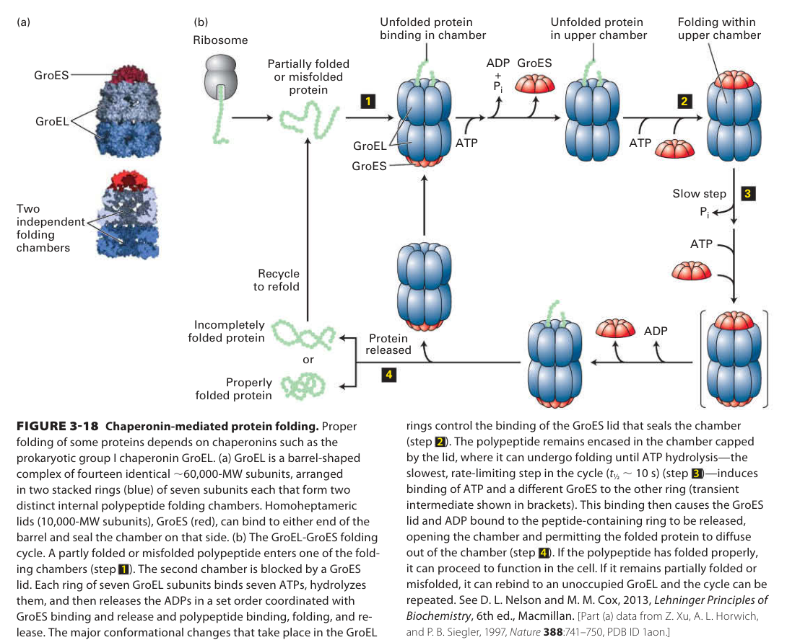
| GroEL | GroEL |
| GroES | GroES |
| chaperonin | 伴侣蛋白 |
| folding chamber | 折叠腔 |
| lid | 盖 |
折叠）与参与蛋白质降解的 26S 蛋白酶体（在 3.4 节讨论）的结构之间有惊人相似。此外，AAA+ 家族 ATP 酶的一组蛋白质由具中央孔的六聚体环组成，底物可进入其中进行折叠或展开，或在某些情况下进行蛋白水解；这些例子将在 3.4 节和第 13 章讨论。
蛋白质折叠由脯氨酸异构酶促进
如前所学，肽键两侧的多肽链部分（P1 和 P2）几乎总是取反式构型（图 3-19a）。然而，当 P2 为脯氨酸时，反式构型在能量上并不比顺式构型明显更有利（图 3-19b）。在已测定结构的折叠蛋白质中，P2 为脯氨酸的肽键约 5% 表现顺式构型，而 P2 非脯氨酸的所有其他肽键仅 0.03% 表现顺式。由于顺式和反式构型之间的异构化速率相对慢，细胞使用脯氨酸异构酶蛋白来催化这些顺/反异构化，以促进以正确异构体折叠。脯氨酰异构化已被提出作为开关来改变已稳定折叠蛋白质的构象从而改变其活性。事实上，此类异构化可大幅改变某些蛋白质的结构（图 3-19c）。
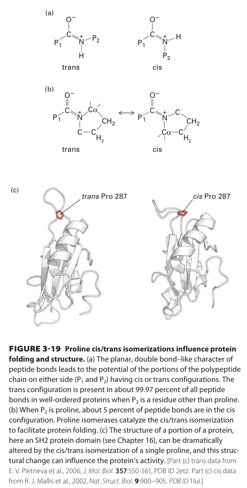
| cis | 顺式 |
| trans | 反式 |
| Proline isomerase | 脯氨酸异构酶 |
异常折叠的蛋白质可形成与疾病相关的淀粉样物
蛋白质合成后，可能由于突变、不当的共价修饰或其环境的化学（如 pH）或物理（如热）改变，折叠成另一种异常的三维结构。错误折叠或变性可导致蛋白质正常功能丧失，并可导致蛋白质被标记销毁（蛋白水解降解），如本章稍后所述。然而，当降解不完全或跟不上错误折叠蛋白的产生速度时，错误折叠的蛋白质或其蛋白水解片段可在细胞内或细胞外的聚集体或斑块中积累，见于各种器官，包括骨关节、肝脏和大脑。即使是通常高度抗聚集的蛋白质或蛋白质片段（如本征无序蛋白或蛋白质片段），当其浓度足够高或环境条件发生变化时，也会形成聚集体。如上所述，此类聚集体可为无定形或具有良好组织的结构，后者最常见的是淀粉样状态。引人注目的是，许多不同的蛋白质都能各自聚集成具有共同结构--称为交叉 β 折叠片（图 3-20a）--的淀粉样纤维。未折叠或错误折叠蛋白质中通常长 6–12 个残基的短片段彼此氢键结合，形成 β 折叠片的长阵列或丝。在这些阵列中，每条 β 链几乎垂直于丝的长轴，两个长而近乎平坦的 β 折叠片紧密堆叠并相互扭转形成原丝，原丝再一起装配成更粗的丝，称为淀粉样纤维。在每个原丝内，β 链可为平行或反平行（见图 3-5）。尽管某些蛋白质在其天然有功能状态下形成淀粉样纤维，但大多数淀粉样物被认为是蛋白质错误折叠的后果。
淀粉样物最早在沉积于组织中、抗酶降解、并与数十种称为淀粉样变性病的疾病相关的蛋白质聚集体中被认识到。这些疾病包括神经退行性疾病，如人类的阿尔茨海默病和帕金森病，以及牛和羊的可传播性海绵状脑病（"疯牛病"）。这些疾病各自的特征是退化大脑中存在丝状斑块（图 3-20b）。淀粉样变性病最常随衰老发生；然而，编码聚集蛋白的基因突变可导致早期淀粉样形成和疾病发作。组成斑块的淀粉样纤维源自丰富的天然蛋白质。例如，嵌入质膜的淀粉样前体蛋白的片段形成阿尔茨海默病患者大脑中的斑块；而朊蛋白--一种"感染性"蛋白质--在朊病毒病中形成纤维。在阿尔茨海默病中，过度磷酸化的 tau 蛋白（正常情况下是微管结合蛋白，见第 18 章）形式形成称为"缠结"的扭曲纤维。这些淀粉样物，无论是作为相对短、水溶性的原丝还是作为长、不溶的纤维，都被认为具有毒性并直接促成淀粉样变性病的病理。■
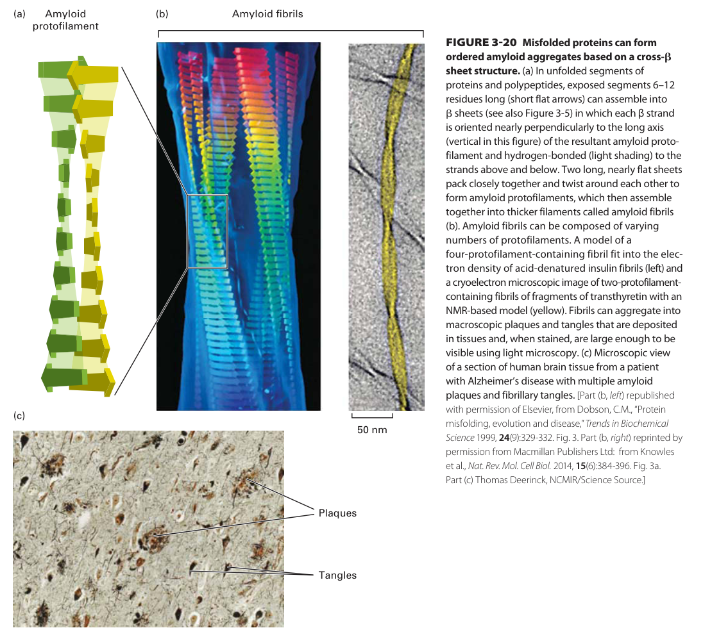
| Plaques | 斑块 |
| Tangles | 缠结 |
| Amyloid | 淀粉样 |
| protofilament | 原丝 |
| Amyloid fibrils | 淀粉样纤维 |
| cross-β sheet | 交叉β折叠片 |
第 3.2 节关键概念
蛋白质折叠
● 蛋白质的一级结构（氨基酸序列）决定其三维结构，后者决定其功能。简言之，功能源自结构；结构源自序列。
● 由于蛋白质功能源自蛋白质结构，新合成的蛋白质必须折叠成正确形状才能正常发挥功能。
● 肽键的平面结构限制了多肽可具有的构象数目（见图 3-15）。
● 蛋白质的氨基酸序列决定其折叠成特定的三维构象--天然态。若在破坏稳定其三维结构的非共价相互作用的条件下处理，蛋白质将展开或变性。
● 错误折叠或变性蛋白质中可见两大类非天然构象：(1) 单体未折叠或变性结构，(2) 聚集体，可为无定形或具有良好组织的结构。
● 体内蛋白质折叠在依赖 ATP 的分子伴侣协助下进行。分子伴侣能以多种方式影响蛋白质，包括防止错误折叠和聚集、促进正确折叠，以及维持后续蛋白质活性所需的适当稳定结构（见图 3-17）。
● 有两大类分子伴侣：(1) 分子伴侣，结合底物蛋白的一个短片段；(2) 伴侣蛋白，形成折叠腔，未折叠蛋白的全部或部分可被隔离其中，给予它时间和适当环境以正确折叠。ATP 结合和水解的循环，以及所产生的 ADP 与新 ATP 分子的交换，在分子伴侣促进蛋白质折叠的机制中起关键作用。
● 许多错误折叠或变性的蛋白质可形成组织良好的聚集体--淀粉样纤维，由形成近乎垂直于纤维轴的长 β 折叠片阵列的短多肽片段构成，称为交叉 β 结构。形成抗多种酶降解的淀粉样纤维与数十种称为淀粉样变性病的疾病相关。例子包括神经退行性疾病阿尔茨海默病和帕金森病。
3.3 蛋白质结合与酶催化
蛋白质在细胞内外执行极其多样的活动，但大多数这些多样功能都建立在蛋白质进行一种共同活动的能力之上：结合。蛋白质彼此结合、与其他大分子结合、与小分子结合、与离子结合。本节描述蛋白质结合的一些关键特征，然后更详细地考察一类蛋白质--酶。其他功能类别的蛋白质（结构、骨架、运输、调节、马达）的活性将在后续章节描述。
配体的特异性结合是大多数蛋白质功能的基础
蛋白质结合的分子称为其配体。在某些情况下，配体结合引起蛋白质形状变化。这种构象变化是许多蛋白质作用机制不可或缺的部分，在调节蛋白质活性中也很重要。
蛋白质结合配体的方式可用两个性质来表征。特异性指蛋白质优先结合一种分子或极少数几种分子而非所有其他分子的能力。亲和力指结合的紧密程度或强度，通常以解离常数（Kd）表示。蛋白质-配体复合物的 Kd，即结合反应平衡常数 Keq 的倒数，是亲和力最常见的定量度量（见第 2 章）。蛋白质与配体之间的相互作用越强，Kd 值越低。蛋白质对配体的特异性和亲和力都取决于配体结合位点的结构。要进行高亲和力和高度特异的相互作用，结合位点的形状和
化学性质必须与配体分子互补，这一性质称为分子互补性。如第 2 章所见，分子互补性使分子能在近距离形成多种非共价相互作用从而粘附在一起。
蛋白质-配体结合中研究最透彻的例子之一--涉及高亲和力和极精细的特异性--是抗体与抗原的结合。抗体是在血液中循环的蛋白质，由免疫系统针对抗原产生，抗原通常是传染源（如细菌或病毒）或其他外来物质（如花粉中的蛋白质或多糖）中的大分子。针对不同抗原产生不同抗体，这些抗体具有显著特征：特异性结合（"识别"）抗原上最初诱导该抗体产生的那部分（称为表位），而不结合其他分子。抗体作为抗原的特异传感器，形成抗原-抗体复合物，启动免疫系统细胞中一连串保护反应。第 23 章讨论抗体及其在免疫系统中的作用，本章稍后将讨论利用抗体的蛋白质研究技术。此处我们简要介绍抗体的结构及其与表位的结合。
抗体是 Y 形分子，通常由两条相同的较长链（重链）和两条相同的较短链（轻链）组成。在 IgG 抗体（也称免疫球蛋白，见图 3-21a）中，每条重链有四个球状结构域，每条轻链有两个，这些都称为免疫球蛋白（Ig）结构域。IgG 抗体的两个分叉臂各含一条轻链，通过二硫键与一条重链相连，两个二硫键共价连接两条重链。每个臂的末端附近有六个高度可变的环，称为互补决定区（CDR），形成抗原结合位点。这六个环的序列在抗体间高度可变，产生独特的互补配体结合位点，使其对不同表位具有特异性（图 3-21b）。抗体与表位表面之间的紧密接触，由众多非共价相互作用稳定，是抗体表现出极其精确结合特异性的原因。
抗体的特异性如此精确，以至于它们能区分同一物种不同个体成员的细胞，在某些情况下能区分仅相差一个氨基酸的蛋白质，甚至能区分序列相同但翻译后修饰不同的蛋白质。由于其特异性和易于产生（见第 23 章），抗体是后续章节讨论的许多实验中高度有用的试剂。
我们将在全书看到许多蛋白质-配体结合的例子，包括激素与受体的结合（见第 15 章）、调节分子与 DNA 的结合（见第 9 章）、细胞黏附分子与细胞外基质的结合（见第 20 章）等等。此处我们聚焦于一类蛋白质--酶--与配体结合如何导致对细胞存活和功能至关重要的化学反应的催化。
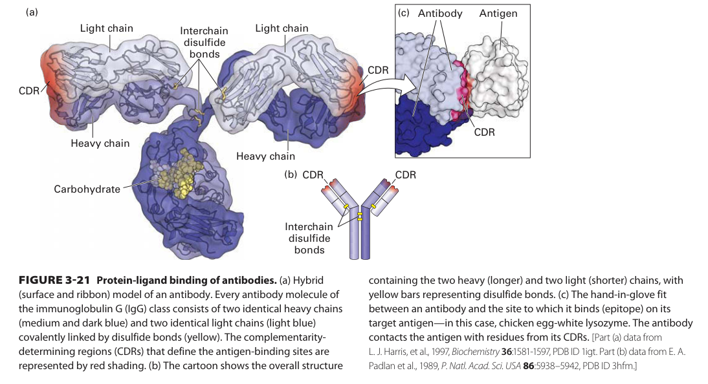
| heavy chain | 重链 |
| light chain | 轻链 |
| CDR | 互补决定区 |
| disulfide bond | 二硫键 |
| epitope | 表位 |
酶是高效且特异的催化剂
催化化学反应--共价键的形成与断裂--的蛋白质称为酶，酶的配体称为底物。酶构成一个庞大且非常重要的蛋白质功能类别--事实上，细胞中几乎每个化学反应都由一种特定的催化剂（通常是酶）催化。细胞中另一种催化大分子由 RNA 构成，这些 RNA 称为核酶（见第 5 章）。
已鉴定出数千种不同类型的酶，每种催化单一化学反应或一组密切相关的反应。某些酶见于大多数细胞，因为它们催化常见细胞产物（如蛋白质、核酸和磷脂）的合成，或参与从营养物中获取能量（如细胞呼吸中将葡萄糖和氧转化为二氧化碳和水）。其他酶仅存在于特定类型细胞，因为它们催化该细胞类型独有的化学反应（如神经元中将酪氨酸转化为神经递质多巴胺的酶）。尽管大多数酶位于细胞内，一些被分泌并在胞外位点发挥作用，如血液、消化道，甚至在生物体外（如毒蛇毒液中的毒性酶）。
与所有催化剂一样（见第 2 章），酶提高反应速率，但不影响反应的程度（由反应物与产物之间的自由能变化 ΔG 决定），且酶本身不因所催化的反应而发生永久性改变。酶通过降低过渡态的能量，从而降低达到过渡态所需的活化能来提高反应速率（图 3-22）。在试管中，木炭和铂等催化剂促进反应，但通常只在高温或高压、极端高或低 pH、或有机溶剂中进行。然而在细胞内，酶必须在 37 °C
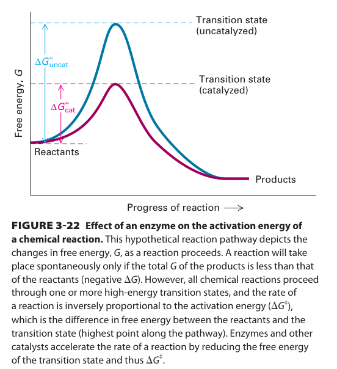
| activation energy | 活化能 |
| transition state | 过渡态 |
| reactants | 反应物 |
| products | 产物 |
和 1 个大气压、生理 pH 值（通常 6.5–7.5，有时更低）的水环境中有效发挥作用。引人注目的是，酶表现出巨大的催化能力，在某些情况下将反应速率加速到其他条件相似的对应非催化反应的 10⁶–10¹² 倍。
酶的活性位点结合底物并执行催化
酶的某些氨基酸在决定其特异性和催化能力方面尤为重要。在酶的天然构象中，至关重要的氨基酸（通常来自多肽线性序列的不同部分）被带到邻近位置，在酶表面形成一个裂隙，称为活性位点（图 3-23）。活性位点通常只占整个蛋白质的一小部分；其余部分参与多肽的折叠、活性位点的调节以及与其他分子的相互作用。
活性位点由两个功能重要的区域组成：底物结合位点（识别并结合底物）和催化位点（底物结合后执行化学反应）。催化位点中的催化基团是氨基酸侧链和主链的羧基和氨基。在某些酶中，催化位点和底物结合位点重叠；在其他酶中，这两个区域在结构上是分开的。
底物结合位点负责酶显著的特异性。仅改变酶底物结构中的一个或几个原子，或底物几何（如立体化学）的细微变化，就可产生不再是该酶底物的变体分子。如同上所述抗体对抗原的特异性，酶对底物的特异性是
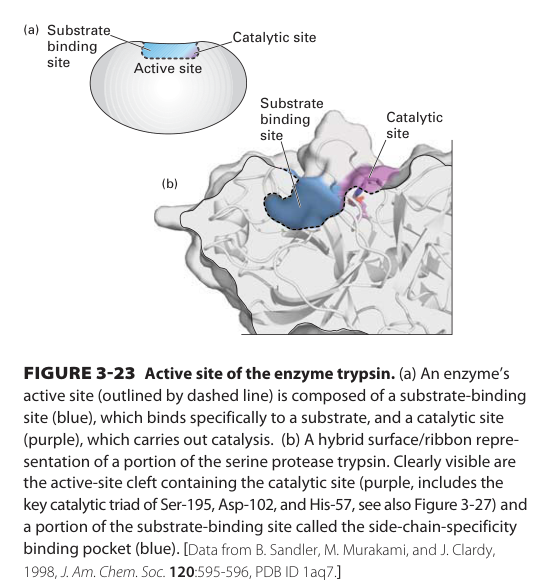
| active site | 活性位点 |
| substrate-binding site | 底物结合位点 |
| catalytic site | 催化位点 |
| catalytic triad | 催化三联体 |
酶的底物结合位点与底物之间精确分子互补性的结果。通常只有一种或少数几种底物能精确嵌入结合位点。
底物可能以钥匙插入锁的方式与酶结合的想法，最早由 Emil Fischer 于 1894 年提出。Daniel Koshland 于 1958 年对此提出修正，称为诱导契合，认为底物结合位点不像锁那样刚性，而是柔性的，当底物结合时被诱导改变形状以更优化催化。1913 年，Leonor Michaelis 和 Maud Leonora Menten 提供了支持酶-底物结合假说的关键证据。他们表明，在低底物浓度下酶促反应速率与底物浓度成正比，但随着底物浓度增加，速率达到平台即最大速度 Vmax，并变得与底物浓度无关，Vmax 的值与反应混合物中酶的量成正比（图 3-24）。
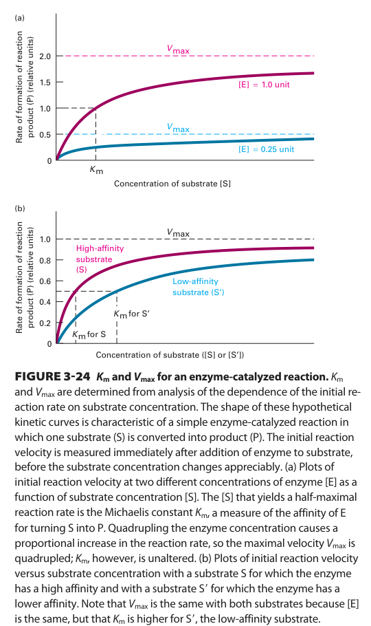
| Vmax | 最大速度 |
| Km | 米氏常数 |
Michaelis 和 Menten 推断，这些特性是由于底物分子（S）结合到酶（E）上固定且有限数目的位点上，他们称此结合物种为酶-底物（ES）复合物。在高底物浓度下，酶上所有结合位点都结合了底物，底物结合位点被称为底物饱和--无法再与活性位点结合，反应达到最大速度。Michaelis 和 Menten 提出，ES 复合物与未结合的酶和底物处于平衡，是底物最终不可逆转化为产物（P）的中间步骤（图 3-25）：
E + S ⇌ ES → E + P
而在特定底物浓度 [S] 下产物生成的速率 V0 由现称为 Michaelis-Menten 方程的式子给出：
V0 = Vmax [S] / ([S] + Km) (3-1)
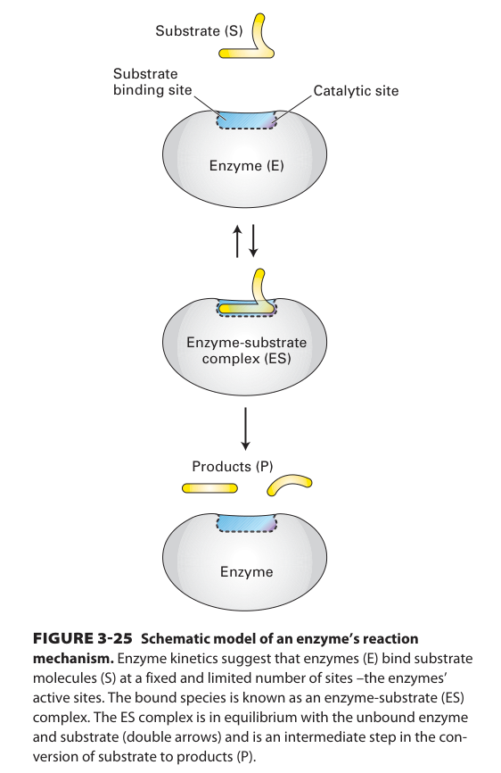
| Enzyme (E) | 酶(E) |
| Substrate (S) | 底物(S) |
| Enzyme-substrate complex (ES) | 酶-底物复合物(ES) |
| Products (P) | 产物(P) |
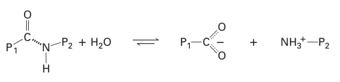
其中 Michaelis 常数 Km，是衡量酶对其底物亲和力的指标，是产生半最大反应速率（即图 3-24 中的 ½ Vmax）的底物浓度。Km 在性质上与解离常数 Kd 相似但不相同（见第 2 章）。Km 值越小，酶从稀底物溶液中生成产物的效率越高，达到半最大速度所需的底物浓度越低。Kd 越小，达到 50% 结合所需的配体浓度越低。细胞中各种小分子的浓度差异很大，作用于它们的不同酶的 Km 值也如此。一个有用的经验法则是，底物的胞内浓度通常与结合酶的 Km 值大致相同或略高。
底物饱和下的反应速率在酶之间差异巨大。单个酶活性位点每秒将底物转化为产物的最大数目（称为转换数），对很慢的酶可小于 1。最快酶之一的碳酸酐酶的转换数为 6 × 10⁵ 分子/秒。
许多酶通过将过程分为多个离散化学反应来催化底物转化为产物，其中一个反应的产物是后续反应的底物。这些连续反应在最终释放产物前生成多种不同的酶-底物复合物（ES、ES′、ES″等）：
E + S ⇌ ES ⇌ ES′ ⇌ ES″ ⇌ ... → E + P
此类多步反应的能量曲线涉及多个峰谷（图 3-26）。已开发出捕获此类反应中间体的方法，以了解更多关于酶如何催化反应的细节。
丝氨酸蛋白酶展示酶活性位点如何工作
丝氨酸蛋白酶是一大类切割蛋白质（蛋白水解）的酶，在整个生物世界中被使用--消化食物（胰腺酶胰蛋白酶、胰凝乳蛋白酶和弹性蛋白酶）、控制血液凝固（酶凝血酶），甚至帮助蚕蛾咬破茧（茧酶）。这类酶很好地说明了酶的底物结合位点和催化位点如何在多步反应中协同将底物转化为产物。此处我们考察胰蛋白酶及其两个进化上密切相关的胰腺蛋白酶--胰凝乳蛋白酶和弹性蛋白酶--如何催化多肽底物中肽键的切割。
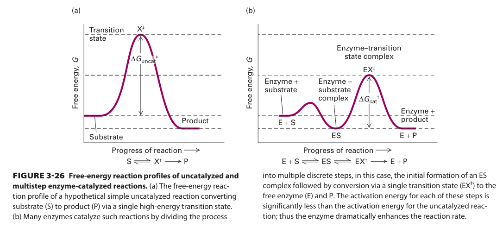
| transition state | 过渡态 |
| activation energy | 活化能 |
其中 P1 是待切割肽键 N 端侧的蛋白质部分，P2 是 C 端侧的部分。我们首先考虑丝氨酸蛋白酶如何特异结合其底物，然后详细展示催化如何发生。
图 3-27a 展示了底物多肽如何结合到胰蛋白酶活性位点的底物结合位点。有两个关键结合相互作用。第一，底物（黑色多肽主链）和酶（蓝色多肽主链）形成类似于 β 折叠片的氢键。第二，决定底物中哪个肽键被切割的底物关键侧链，伸入酶的侧链特异性结合口袋，口袋底部有胰蛋白酶 Asp-189 的带负电侧链。胰蛋白酶明显偏好水解具有长、带正电侧链（精氨酸或赖氨酸）的氨基酸的羧基（C=O）侧的底物，因为该侧链被带负电的 Asp-189 稳定在酶的侧链特异性结合口袋中。
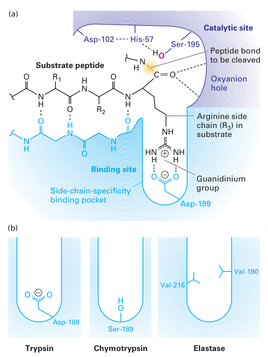
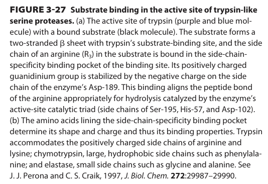
| Trypsin | 胰蛋白酶 |
| Chymotrypsin | 胰凝乳蛋白酶 |
| Elastase | 弹性蛋白酶 |
| Guanidinium group | 胍基 |
| Asp-189 | Asp-189 |
| Oxyanion hole | 氧负离子洞 |
| Catalytic site | 催化位点 |
| Binding site | 结合位点 |
其他方面相似的结合口袋结构的细微差异，有助于解释与胰蛋白酶相关的两种丝氨酸蛋白酶的不同底物特异性：胰凝乳蛋白酶偏好大的芳香基团（如 Phe、Tyr、Trp），弹性蛋白酶偏好 Gly 和 Ala 的小侧链（图 3-27b）。胰凝乳蛋白酶中不带电的 Ser-189 允许大的、不带电的疏水侧链稳定地结合在口袋中。弹性蛋白酶的特异性受胰蛋白酶结合口袋侧面的甘氨酸被缬氨酸的分支脂肪族侧链（Val-216 和 Val-190）取代的影响，这些侧链阻塞结合口袋（见图 3-27b）。结果是，底物中的大侧链无法嵌入弹性蛋白酶的结合口袋，而在此位置具有短丙氨酸或甘氨酸侧链的底物能很好结合并被随后的切割。
在催化位点，所有三种酶都使用 195 位丝氨酸侧链上的羟基来催化底物蛋白质中肽键的水解。由 Ser-195、His-57 和 Asp-102 三个侧链形成的催化三联体参与本质上是两步的水解反应。图 3-28 展示了
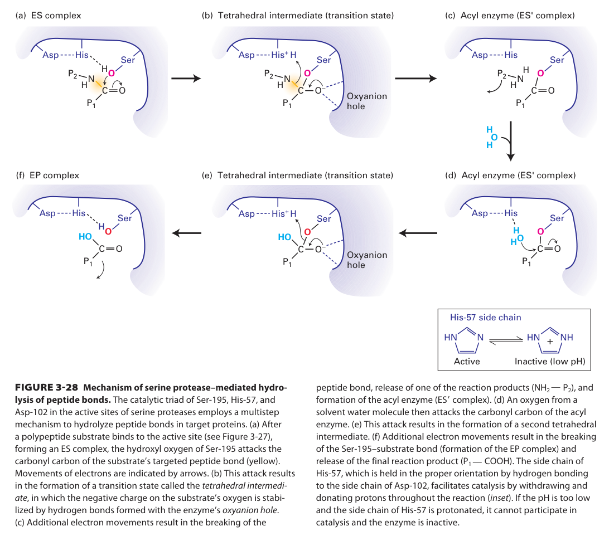
| catalytic triad | 催化三联体 |
| acyl enzyme | 酰基酶 |
| tetrahedral intermediate | 四面体中间体 |
催化三联体如何协同断裂肽键，Asp-102 和 His-57 支持 Ser-195 羟基氧对底物羰基碳的攻击。此攻击最初形成碳上连接四个基团的不稳定过渡态（四面体中间体）。随后 C−N 肽键断裂释放底物蛋白质的一部分（NH3−P2），而另一部分通过酯键与丝氨酸的氧共价连接，形成相对稳定的酰基酶中间体。随后在涉及另一个不稳定四面体中间体的反应中，用来自水的氧替换此氧，导致最终产物（P1−COOH）的释放。四面体中间体过渡态通过与酶主链氨基基团的氢键被部分稳定，此处称为氧负离子洞。丝氨酸蛋白酶大家族及相关酶（都具有活性位点丝氨酸）说明，高效反应机制如何被不同酶反复用于催化相似反应。
丝氨酸蛋白酶机制指出了酶催化的几个关键特征。第一，酶催化位点进化为稳定过渡态的结合，从而降低活化能并加速整体反应。第二，多个侧链连同多肽主链，在三维中精心组织，协同将底物化学转化为产物，常通过多步反应。
第三，由一个或多个氨基酸侧链介导的酸碱催化常被酶使用，如丝氨酸蛋白酶中 His-57 的咪唑基作为碱去除 Ser-195 羟基的氢。结果是，催化位点中一个或多个氨基酸侧链的特定电离状态（质子化或非质子化）可能才与催化兼容，因此酶的活性可能依赖于 pH。例如，丝氨酸蛋白酶中 His-57 的咪唑基（pKa 约 6.8）只有在非质子化时才能帮助 Ser-195 羟基攻击底物。因此蛋白酶的活性在 pH < 6.8（咪唑基质子化）时低，pH 4–8 范围内的 pH 活性曲线形状与 His-57 侧链的滴定相符（由 Henderson-Hasselbalch 方程支配，在 pH 6.8 附近有转折点）（见胰凝乳蛋白酶数据，图 3-29，并见第 2 章）。在更高 pH 值下活性下降，产生钟形活性曲线，因为蛋白质氨基末端的氨基（pKa 约 9）
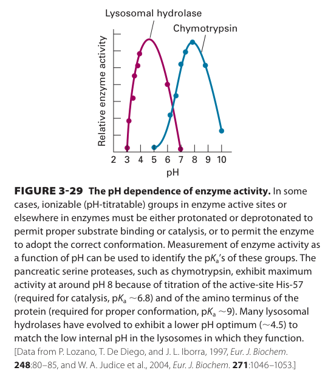
| Relative enzyme activity | 相对酶活性 |
| Lysosomal hydrolase | 溶酶体水解酶 |
| Chymotrypsin | 胰凝乳蛋白酶 |
去质子化时蛋白质的正确折叠被破坏；活性位点附近的构象因此改变。
酶活性的 pH 敏感性可由于催化基团电离的变化、直接参与底物结合的基团、或影响蛋白质构象的基团所致。胰腺丝氨酸蛋白酶进化为在肠道中中性或微碱性条件下发挥作用；因此其最适 pH 约 8。在酸性条件下起作用的蛋白酶和其他水解酶必须采用不同的催化机制。胃（pH 约 1）内的酶（如蛋白酶胃蛋白酶）和溶酶体（pH 约 4.5）内的酶即是如此，后者在细胞内降解大分子中起关键作用（见溶酶体水解酶数据，图 3-29）。事实上，溶酶体水解酶降解多种生物分子（蛋白质、脂质等），在胞质 pH（约 7）下相对无活性，这有助于在这些酶逃出膜结合溶酶体限制时保护细胞免于自我消化。
酶催化的一个关键特征（丝氨酸蛋白酶中未见，但许多其他酶中存在）是辅因子或辅基。这个"帮手"基团是结合在活性位点的非多肽小分子或离子（如铁、锌、铜、锰），在反应机制中起重要作用。酶中的小有机辅基也称为辅酶。其中一些在反应中被化学修饰，因此每次反应后需替换或再生；其他则不然。例子包括 NAD⁺（烟酰胺腺嘌呤二核苷酸）、FAD（黄素腺嘌呤二核苷酸）（见图 2-33），以及血红蛋白中结合氧或在某些细胞色素中传递电子的血红素基团（见图 12-20）。因此，酶催化的化学反应不受多肽链中氨基酸类型数目有限的限制。许多维生素[例如 B 族维生素硫胺素（B1）、核黄素（B2）、烟酸（B3）和吡哆醇（B6），以及维生素 C]，不能在哺乳动物细胞中合成，它们起辅酶作用或用于生成辅酶。这就是为什么哺乳动物细胞在实验室培养时必须向培养基中补充维生素（见第 4 章）。
能结合活性位点并破坏催化反应的小分子称为酶抑制剂。此类抑制剂是研究酶在细胞和生物体中作用的有用工具。直接结合酶结合位点从而与正常底物直接竞争的抑制剂称为竞争性抑制剂。非竞争性抑制剂以其他方式干扰酶活性--例如，结合酶上其他位点并改变其构象。酶抑制剂补充了遗传突变和一种称为 RNA 干扰（RNAi）的技术在探究酶在细胞中功能方面的应用（见第 6 章）。在这三种方法中，破坏酶活性的细胞后果可用于推断酶的正常功能。同样方法可用于研究非酶大分子的功能。然而，如果抑制剂（如常见情况那样）阻断不止一种蛋白质的活性，解释抑制剂研究的结果可能很复杂。
小分子对蛋白质活性的抑制是许多药物以及化学战剂的基础。阿司匹林抑制称为环加氧酶的酶，其产物可引起疼痛。沙林和其他神经毒剂与丝氨酸蛋白酶和相关酶乙酰胆碱酯酶（调节神经传导的关键酶，见第 22 章）的活性丝氨酸羟基反应。■
同一通路中的酶常彼此物理结合
参与共同代谢过程的酶（如糖酵解中葡萄糖降解为丙酮酸，见第 12 章）通常位于同一细胞区室，无论是细胞质、膜上还是某特定细胞器内。在此区室内，一个反应的产物可通过扩散移动到代谢通路的下一个酶。然而，扩散涉及随机运动，对在酶之间移动分子而言可能是缓慢、相对低效的过程（图 3-30a）。
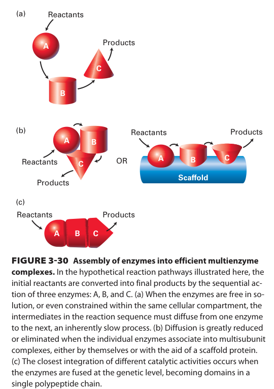
| Reactants | 反应物 |
| Products | 产物 |
| Scaffold | 骨架 |
为克服这一障碍，细胞进化出将共同通路中的酶带到邻近的机制，这一过程称为代谢偶联。在最简单的此类机制中，具不同催化活性的多肽作为多聚体酶的亚基紧密聚集，或组装在将它们维系在一起的共同"骨架"上（图 3-30b）。这种安排使一个反应的产物能直接通道到通路中的下一个酶。在某些情况下，独立的蛋白质在遗传水平上融合，产生单一的多结构域、多功能酶（图 3-30c）。代谢偶联通常涉及大型多蛋白复合物，如本章前述。
第 3.3 节关键概念
蛋白质结合与酶催化
● 蛋白质的功能取决于其结合其他分子（配体）的能力。例如，抗体结合一组称为抗原的配体，酶结合称为底物的反应物，后者将通过化学反应转化为产物。
● 蛋白质对特定配体的特异性指优先结合一种或少数几种密切相关的配体。蛋白质对特定配体的亲和力指结合强度，通常以解离常数 Kd 表示。
● 蛋白质能结合配体是因为配体结合位点与相应配体之间的分子互补性。
● 酶是催化蛋白质，通过降低活化能和稳定过渡态中间体加速细胞反应速率（见图 3-22）。
● 酶的活性位点通常只占蛋白质的一小部分，含两个功能部分：底物结合位点和催化位点。底物结合位点因其与底物的分子互补性而负责酶精细的特异性。
● 底物（S）与酶（E）的初始结合导致酶-底物复合物（ES）的形成，后者随后在催化位点的催化基团催化下经历一个或多个反应，直到最终产物（P）形成。
● 从反应速率对底物浓度的图可确定酶的两个特征参数：Michaelis 常数 Km（粗略衡量酶将底物转化为产物的亲和力）和最大速度 Vmax（衡量其催化能力）（见图 3-24）。
● 酶催化反应的速率差异巨大，转换数（底物饱和下单个活性位点每秒转化为产物的底物分子数）从少于 1 到 6 × 10⁵ 分子/秒。
● 许多酶通过将过程分为多个离散化学反应来催化底物转化为产物，涉及多种不同的酶-底物复合物（ES′、ES″等）。
● 丝氨酸蛋白酶使用 Ser-195、His-57 和 Asp-102 的侧链作为催化基团水解底物蛋白质中的肽键。丝氨酸蛋白酶结合位点中侧链特异性结合口袋内的氨基酸决定底物蛋白质中哪个残基的肽键将被水解，并解释蛋白酶特异性的差异（如胰蛋白酶对比胰凝乳蛋白酶和弹性蛋白酶）。
● 酶常使用由一个或多个氨基酸侧链介导的酸碱催化来催化反应，如丝氨酸蛋白酶中 His-57 的咪唑基。催化基团质子化的 pH 依赖性（pKa）常反映在酶活性的 pH-速率曲线中。
● 非多肽小分子或离子（称为辅因子或辅基）结合某些酶的活性位点，在酶催化中起重要作用。酶中的小有机辅基也称为辅酶；许多不能在高等动物细胞中合成的维生素起辅酶作用或用于生成辅酶。
● 共同代谢通路中的酶常位于同一细胞区室内，并可能进一步作为单体蛋白的结构域、多聚体蛋白的亚基或组装在共同骨架上的蛋白质复合物的组分而结合（见图 3-30）。
3.4 蛋白质功能的调控
细胞中的大多数过程并非彼此独立或以恒定速率进行。所有蛋白质和其他生物分子的活性都受到调控，以整合其功能，实现最佳生存性能。例如，酶的催化活性受调控，使反应产物的量恰好满足细胞需要。因此，底物和产物的稳态浓度可因细胞条件而异。非酶蛋白质的调控--如膜通道的开闭或大分子复合物的组装--同样至关重要。
一般而言，有三种方式调控蛋白质活性。第一，细胞可通过改变蛋白质的合成速率、降解速率或两者来提高或降低其稳态水平。第二，细胞可改变蛋白质的内在活性（区别于其数量）。例如，通过非共价和共价相互作用，细胞可改变底物结合的亲和力，或蛋白质处于活性与非活性构象的时间比例。第三，可改变蛋白质本身、蛋白质活性靶标（如酶的底物）或蛋白质活性所需的其他分子（如酶的辅因子）在细胞内的位置或浓度。这三种调控都在细胞的生命和功能中起重要作用。本节首先讨论调控蛋白质数量的机制，然后转向调控蛋白质活性的非共价和共价相互作用。
受调控的蛋白质合成与降解是细胞的基本特性
蛋白质的合成速率由编码该蛋白质的 DNA 转化为 mRNA 的速率（转录）、细胞中活性 mRNA 的稳态量，以及 mRNA 转化为新合成蛋白质的速率（翻译）决定。这些重要过程在第 5 章详述。
胞内蛋白质的寿命短至几分钟（如有丝分裂周期蛋白，帮助调控细胞分裂有丝分裂阶段的通过，见第 19 章），长至与生物体同龄（如眼晶状体中的蛋白质）。蛋白质寿命主要由受调控的蛋白质降解控制。
蛋白质降解在细胞中起两个特别重要的作用。第一，它去除可能有毒、错误折叠或组装不当、或受损的蛋白质--包括突变基因的产物和被化学活性细胞代谢物或应激（如热激）损伤的蛋白质。尽管存在分子伴侣介导的蛋白质折叠，一些新合成的蛋白质因错误折叠而被迅速降解。这种降解可能是由于未能及时结合必要的分子伴侣指导蛋白质折叠，或由于其组装成复合物有缺陷所致。大多数其他蛋白质降解较慢，在哺乳动物细胞中约每小时降解 1–2%。第二，对原本正常蛋白质的受控破坏，连同受控的合成速率，提供了维持蛋白质适当水平及其活性的强大机制，并允许这些水平快速变化以帮助细胞响应不断变化的条件。
真核细胞有几条降解蛋白质的途径。一条主要途径是由溶酶体内的酶降解，溶酶体是膜限定的细胞器，其酸性内部（pH 约 4.5）充满大量水解酶。溶酶体降解主要针对细胞老化或有缺陷的细胞器--称为自噬的过程（见第 14 章）--以及细胞摄取的胞外蛋白质。溶酶体将在后续章节详述。此处我们聚焦另一条重要的降解途径：蛋白酶体进行的胞质蛋白质降解，它可占哺乳动物细胞蛋白质降解的 90%。
蛋白酶体是用于降解蛋白质的分子机器
蛋白酶体是非常大的蛋白质降解分子机器，影响许多不同的细胞功能，
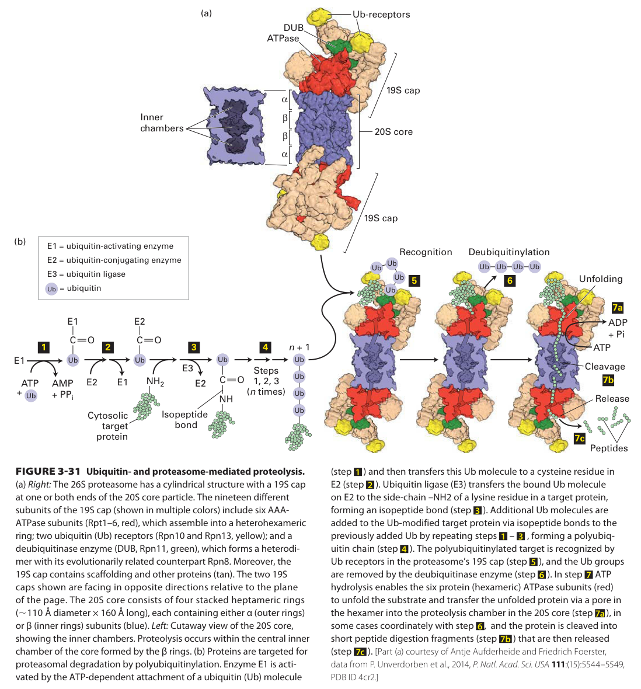
| proteasome | 蛋白酶体 |
| 19S cap | 19S帽 |
| 20S core | 20S核心 |
| ubiquitin | 泛素 |
| E1 | 泛素激活酶E1 |
| E2 | 泛素结合酶E2 |
| E3 | 泛素连接酶E3 |
| isopeptide bond | 异肽键 |
| deubiquitinase | 去泛素化酶 |
包括细胞周期（见第 19 章）、转录、DNA 修复（见第 5 章）、程序性细胞死亡或细胞凋亡（见第 21 章）、识别和响应外来生物感染（见第 23 章），以及去除错误折叠的蛋白质。一个典型的哺乳动物细胞中约有 30,000 个蛋白酶体。
蛋白酶体由约 60 个蛋白质亚基组成，质量约 2.4 × 10⁶ Da。蛋白酶体有一个圆柱形桶状催化核心（图 3-31a），称为 20S 蛋白酶体（其中 S 是基于颗粒沉降性质的 Svedberg 单位，与其大小成正比），高约 14.8 nm，直径约 11.3 nm。结合在该核心两端的是一个或两个 19S 帽复合物，它们调控 20S 催化核心的活性。当核心与一个或两个帽结合时，统称为 26S 复合物，尽管含两帽的复合物更大（30S）。19S 帽有 19 个蛋白质亚基，其中六个能水解 ATP（即它们是 AAA 型 ATP 酶），以提供展开蛋白质底物并选择性将其转移到蛋白酶体催化核心内腔所需的能量。酵母中的遗传研究表明，没有功能性蛋白酶体的细胞无法存活，从而证明其重要性。此外，适当的蛋白酶体活性如此重要，细胞会消耗合成一个蛋白质所需能量的 30% 来在蛋白酶体中降解它。
20S 蛋白酶体催化核心含两个各由七个 β 亚基组成的内环，每个环有三个蛋白水解活性位点面向由这些环形成的约 1.7 nm 直径内腔，以及两个各由七个 α 亚基组成的外环，它们通过一个可被 19S 帽打开的入口通道限制底物进入（见图 3-31a）。蛋白酶体能彻底降解大多数蛋白质，因为每个 β 亚基环中的三个活性位点能切割疏水残基、酸性残基或碱性残基处的肽键。多肽底物必须通过外 α 亚基环中心一个受调控的约 1.3 nm 直径孔口进入腔内。在 26S 蛋白酶体中，孔口（窄且通常只允许未折叠蛋白质进入）的开放由 19S 帽中的 ATP 酶控制。这些 ATP 酶负责展开蛋白质底物并将这些未折叠的多肽转移到催化核心的内腔（图 3-31b，右下）。蛋白酶体消化产生的短肽产物（长 2–24 个残基）离开腔，并被胞质肽酶迅速进一步降解，最终转化为单个（"游离"）氨基酸。一位研究者曾打趣说，蛋白酶体是"细胞毁灭之室"，蛋白质在其中遭受"千刀万剐之死"。
蛋白酶体功能抑制剂在实验室和临床中证明极为有用。小分子蛋白酶体抑制剂（如 MG132）用于在实验室阻断蛋白酶体降解，帮助评估蛋白酶体及下文将见的泛素化的作用。其他小分子蛋白酶体抑制剂已用于治疗。由于蛋白酶体介导的蛋白质分解在细胞中的全局重要性，持续完全抑制蛋白酶体会杀死细胞。然而，短间隔的部分蛋白酶体抑制被广泛用作癌症化疗方法，尤其是治疗多发性骨髓瘤--一种涉及抗体（免疫球蛋白）产生细胞异常增殖的癌症。骨髓瘤细胞产生异常高水平的潜在毒性、异常免疫球蛋白多肽链，这些被蛋白酶体降解。这些癌细胞中的蛋白酶体抑制导致有毒、错误折叠的免疫球蛋白多肽在细胞内积聚，从而导致细胞死亡。此外，为生存和生长，骨髓瘤细胞需要一种称为 NF-κB 的调节蛋白（见第 16 章）以及其他"促生存"和"促增殖"蛋白质的强健活性。反过来，NF-κB 只有在其抑制剂 I-κB 解离并被蛋白酶体降解时才能充分发挥功能并促进生存和增殖（见第 16 章）。小分子抑制剂药物对蛋白酶体活性的部分抑制导致 I-κB 水平升高，从而降低 NF-κB 活性（即丧失其保护活性）。癌细胞随后增殖减少并死于细胞凋亡。因此，多发性骨髓瘤细胞比正常细胞对蛋白酶体抑制剂更敏感。因此，受控地施用蛋白酶体抑制剂（水平足以杀死癌细胞但不杀死正常细胞）已证明是多发性骨髓瘤的有效疗法。■
泛素标记胞质蛋白质在蛋白酶体中降解
如果蛋白酶体要迅速降解那些有缺陷或计划被清除的蛋白质，它必须能区分需要降解的蛋白质和不需要的。细胞通过共价附着一个由高度保守（从酵母到人类）的 76 残基多肽--泛素（Ub）--的多个拷贝组成的线性链来标记应被降解的蛋白质。这条"多聚泛素尾"作为细胞的"死亡之吻"，标记蛋白质在蛋白酶体中销毁。泛素化过程（图 3-31b，步骤 1–3）涉及三个不同步骤：
1. 通过添加一个泛素分子激活泛素激活酶（E1），此反应需要 ATP。
2. 将此泛素分子转移到泛素结合酶（E2）的一个半胱氨酸残基上。
3. 在泛素蛋白连接酶（E3）催化的反应中，结合到 E2 的泛素的 C 端甘氨酸 76 的羧基与靶蛋白质中赖氨酸残基侧链的氨基之间形成共价键。这种键称为异肽键，因为它共价连接的是侧链氨基（而非 α 氨基）与羧基。随后的连接酶反应通过异肽键将另一个泛素分子的 C 端甘氨酸共价连接到先前添加的泛素的赖氨酸 48 侧链上，生成共价附着于靶蛋白质的多聚泛素链。（我们将稍后讨论通过其他赖氨酸侧链的泛素连接。）
通常，在多聚泛素链中附着四个或更多泛素后，26S 蛋白酶体的 19S 调节帽（有时在辅助蛋白质帮助下）用其 Ub 受体识别多聚泛素标记的蛋白质（见图 3-31a），用 ATP 酶将其展开，并将其运入蛋白酶体核心降解。当多聚泛素化底物被展开并送入蛋白酶体核心时，称为去泛素化酶（Dubs）的酶水解各个泛素之间以及靶蛋白质与泛素之间的键，回收泛素用于额外的蛋白质修饰轮次（见图 3-31b）。人基因组序列分析表明存在约 90 种不同的 Dubs，其中约 80% 在催化三联体中使用半胱氨酸，类似于前述丝氨酸蛋白酶（半胱氨酸侧链的巯基代替丝氨酸侧链的羟基）。在某些 Dubs 中，锌是催化反应的关键参与者。
降解的特异性 将特定蛋白质靶向蛋白酶体降解主要通过 E3 连接酶的底物特异性实现（见图 3-31b，步骤 3）。作为其重要性的证明，人基因组中估计有 600 个或更多泛素连接酶基因。哺乳动物细胞中众多的 E3 连接酶确保各种需要多聚泛素化的蛋白质能在必要时被修饰。一些 E3 连接酶与识别未折叠或错误折叠蛋白质的分子伴侣相关；例如，E3 连接酶 CHIP 是 Hsp70 的共伴侣。这些和其他蛋白质（共伴侣、escort 因子、接头蛋白）可介导 E3 连接酶催化的无法轻易正确复性的功能失调蛋白质的多聚泛素化，从而介导其递送至蛋白酶体降解。在此类情况下，分子伴侣-泛素化-蛋白酶体系统协同进行蛋白质质量控制。
除质量控制外，泛素-蛋白酶体系统可用于调控重要细胞蛋白质的活性。一个例子是称为周期蛋白的蛋白质的受调控降解，周期蛋白控制细胞周期（见第 19 章）。周期蛋白含内部序列 Arg-X-X-Leu-Gly-X-Ile-Gly-Asp/Asn（其中 X 可是任何氨基酸），该序列被特定的泛素化酶复合物识别。在细胞周期的特定时间，每个周期蛋白被周期蛋白激酶磷酸化。此磷酸化被认为引起构象变化，暴露识别序列给泛素化酶，导致多聚泛素化和蛋白酶体降解。
泛素和泛素相关分子的其他功能 有几种泛素的近亲，采用类似的 E1、E2 和 E3 依赖的激活和转移至受体底物的机制。这些泛素样修饰蛋白控制多种过程，如由泛素样修饰蛋白 Sumo 调控的核输入，和由泛素样修饰蛋白 Atg8/LC3 调控的自噬（见第 14 章）。此外，泛素附着于靶蛋白质可用于标记降解以外的目的，如本节稍后所见，其中一些功能涉及通过 Lys-48 以外的多聚泛素连接。
与泛素化一样，去泛素化参与蛋白酶体介导的蛋白质降解以外的过程。本章稍后描述的基于质谱的大规模"蛋白质组学"方法，连同复杂的计算方法，表明通常结合在多蛋白复合物中的 Dubs 参与极其广泛的细胞过程。这些过程从细胞分裂和细胞周期控制（见第 19 章）到膜运输（见第 14 章）到细胞信号通路（见第 15、16 章）。
非共价结合允许蛋白质的别构或协同调控
除调控蛋白质数量外，细胞还可调控蛋白质的内在活性。调控蛋白质功能最重要的机制之一是通过别构相互作用。广义而言，别构（源自希腊语"其他形状"）指由配体的非共价结合诱导的蛋白质三级或四级结构（或两者）的任何变化。当配体结合到蛋白质的一个位点（A）并诱导构象变化从而改变不同位点（B）的活性时，该配体称为该蛋白质的别构效应物，位点 A 称为别构结合位点，该蛋白质称为别构蛋白。根据定义，别构蛋白有多个结合位点，至少一个用于别构效应物，至少一个用于该蛋白质相互作用的其他分子。别构活性变化可为正或负；即可以是蛋白质活性的增加或减少。负别构常涉及多步生化途径的终产物结合并降低催化该途径早期限速步骤的酶的活性。这样可防止产物的过度积累。这种代谢途径的调控也称为终产物抑制或反馈抑制。别构调控在多聚体酶和其他蛋白质中尤为普遍，其中一个亚基的构象变化传递到相邻亚基。
协同性（常与别构同义使用）通常指一个位点上配体的结合对不同位点上同类型配体另一分子结合的影响（正或负）。血红蛋白是正协同结合的经典例子：单个配体--分子氧（O₂）--的结合增加血红蛋白对下一个氧分子的亲和力。血红蛋白四个亚基各含一个血红素分子。血红素基团是血红蛋白的结合氧组分（见图 3-14a）。氧与血红蛋白四个亚基之一中血红素分子的结合诱导局部构象变化，其效应传播到其他亚基，降低额外氧分子与剩余血红素结合的 Kd（增加亲和力），产生 S 形氧结合曲线（图 3-32）。由于氧饱和曲线的 S 形，仅需氧浓度增加四倍即可使血红蛋白中氧结合位点的饱和度从 10% 升至 90%。反之，若无协同性且曲线形状为典型的 Michaelis-Menten（见图 3-24）或非协同结合形状，则需要氧浓度增加八十一倍才能实现其结合位点装载的相同增加。这种协同性使血红蛋白能在氧浓度高的肺部非常高效地摄取氧，并在氧浓度低的组织中卸载氧。
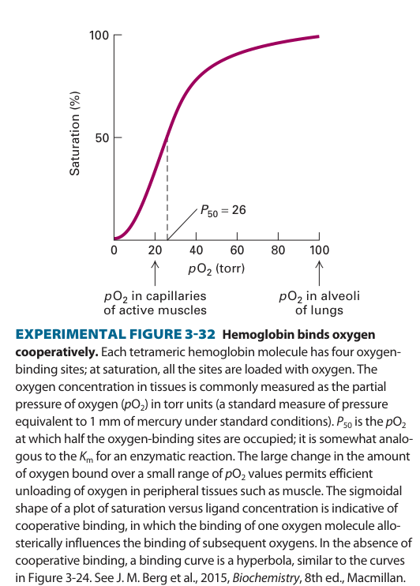
| hemoglobin | 血红蛋白 |
| oxygen | 氧 |
| pO2 | 氧分压 |
| p50 | p50 |
因此协同性放大了系统对其配体浓度变化的敏感性，在许多情况下提供选择性的进化优势。
钙和 GTP 的非共价结合广泛用作控制蛋白质活性的别构开关
与氧引起血红蛋白活性分级别构变化不同，一些其他别构效应物作为开关，通过非共价结合将许多不同蛋白质的活性开启或关闭。我们在全书（尤其是在细胞信号通路语境中，见第 15、16 章）将多次遇到的两个重要别构开关是 Ca²⁺ 和 GTP。
Ca²⁺/钙调蛋白介导的开关 胞质中游离（非与水以外分子结合）的 Ca²⁺ 浓度被专门的膜运输蛋白保持在很低水平（约 10⁻⁷ M），这些蛋白持续将多余 Ca²⁺ 泵出胞质（见第 11、15 章）。然而，如我们将在第 11、15 章所学，当细胞表面膜上的 Ca²⁺ 通道开放允许胞外 Ca²⁺ 流入细胞时，胞质 Ca²⁺ 浓度可增加 10 至 100 倍。这种胞质 Ca²⁺ 的升高被专门的 Ca²⁺ 结合蛋白感知，这些蛋白通过开启或关闭其他蛋白质的活性来改变细胞行为。胞外 Ca²⁺ 对细胞活性的重要性最早由 S. Ringer 于 1883 年记录，他发现悬浮在用"硬"（富含 Ca²⁺）伦敦自来水配制的 NaCl 溶液中的离体大鼠心脏收缩良好，而使用蒸馏、贫 Ca²⁺ 的水时则跳动微弱且很快停止。
许多 Ca²⁺ 结合蛋白使用前述的 EF 手/螺旋-环-螺旋结构基序结合 Ca²⁺（见图 3-10b）。一种研究充分的 EF 手蛋白--钙调蛋白--见于所有真核细胞，它可作为单独的单体蛋白或多聚体蛋白的亚基存在。这种哑铃形分子含四个 Kd 约 10⁻⁶ M 的 Ca²⁺ 结合 EF 手。Ca²⁺ 与钙调蛋白的结合引起构象变化，使 Ca²⁺/钙调蛋白能结合各种靶蛋白质中的保守序列（图 3-33），从而开启或关闭其活性。钙调蛋白和类似 EF 手蛋白因此作为开关蛋白，与 Ca²⁺ 水平变化协同调节其他蛋白质的活性。
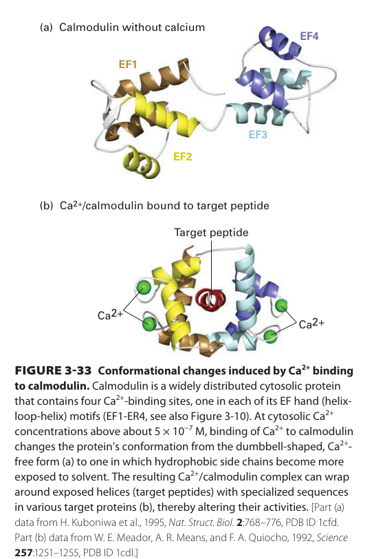
| calmodulin | 钙调蛋白 |
| EF hand | EF手 |
| target peptide | 靶肽 |
鸟苷酸结合蛋白介导的开关 另一组胞内开关蛋白构成 GTP 酶超家族。顾名思义，这些蛋白质是酶--GTP 酶--能将 GTP（鸟苷三磷酸）水解为 GDP（鸟苷二磷酸）。它们包括单体 Ras 蛋白（其结构见图 3-9，结合的 GDP 以蓝色显示）和三聚体 G 蛋白的 Gα 亚基，二者在第 15、16 章详述。Ras 和 Gα 都能结合质膜，在细胞信号传导中发挥作用，并在细胞增殖和分化中起关键作用。GTP 酶超家族的其他成员在蛋白质合成、蛋白质在细胞核与细胞质间运输、网格蛋白包被囊泡的形成及其与靶膜融合、以及肌动蛋白细胞骨架重排中发挥作用。一些 GTP 酶蛋白有共价附着的脂质链（见图 7-19），介导其与膜的结合。我们在后续数章考察各种 GTP 酶开关蛋白在调控胞内信号和其他过程中的作用。
所有 GTP 酶开关蛋白都以两种形式或构象存在（图 3-34）：(1) 结合 GTP 的活性（"开"）形式，能影响其结合的特定靶蛋白质的活性；(2) 结合 GDP 的非活性（"关"）形式。当一个 GTP 分子替换非活性构象中结合的 GDP 时，开关被开启--即蛋白质构象从非活性变为活性。当蛋白质相对缓慢的 GTP 酶活性水解结合的 GTP，将其转化为 GDP 并导致构象变为非活性形式时，开关被关闭。任何给定 GTP 酶开关保持活性、结合 GTP 形式的时间取决于其 GTP 酶活性的速率。因此 GTP 酶活性作为计时器控制此开关。细胞含多种能调节任何给定 GTP 酶开关基线（或内在）GTP 酶活性速率的蛋白质，从而能控制开关保持开启的时间。
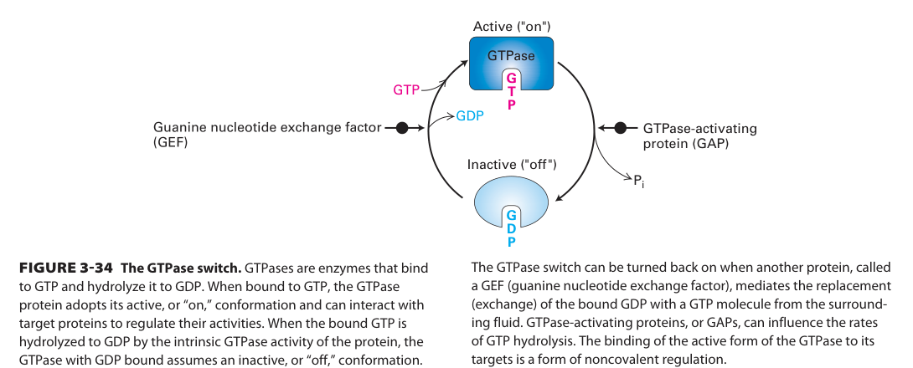
| GTPase | GTP酶 |
| GEF | 鸟苷酸交换因子 |
| GAP | GTP酶激活蛋白 |
| Active (on) | 活性(开) |
| Inactive (off) | 非活性(关) |
例如，GTP 酶激活蛋白（GAP）增加 GTP 酶活性速率，从而缩短 GTP 酶处于活性形式的时间。细胞还有特定蛋白质，其功能是通过介导结合的 GDP 被 GTP 替换（GDP/GTP 交换）来调控非活性 GTP 酶转化为活性--即开启开关。这些蛋白质称为鸟苷酸交换因子（GEF）。带脂质锚的 GTP 酶还受鸟苷酸解离抑制剂（GDI）调控，GDI 结合脂质链从而影响与细胞膜的相互作用。
GAP、GEF 和 GDI 本身受调控，并与其 GTP 酶一起参与控制大量细胞活性的复杂调控网络。因此，突变或病原体对这些精细调控网络的破坏与多种疾病相关并不令人惊讶。影响这些网络的遗传病例子包括 Noonan 综合征（一种发育障碍）、视网膜色素变性（一种退行性眼病）和 X 连锁智力障碍。病原体破坏这些网络的例子包括细菌引起的食物中毒、痢疾（伴腹泻的肠道炎症）、军团病（一种涉及肺部炎症的严重肺炎），甚至鼠疫[也称黑死病，1347 至 1351 年间使中国（约 50% 死亡率）和欧洲（约 33% 死亡率）人口大量减少]。■
磷酸化和去磷酸化共价调控蛋白质活性
除利用上述非共价调节因子外，细胞可使用共价修饰来调控蛋白质的内在活性。调控蛋白质活性最常见的共价机制之一是磷酸化--可逆地将磷酸基团加到丝氨酸、苏氨酸或酪氨酸残基侧链的羟基上。被磷酸化的蛋白质称为磷蛋白。磷酸化由称为蛋白激酶的酶催化，而磷酸的去除（称为去磷酸化）由磷酸酶催化。激酶和磷酸酶的对抗活性为细胞提供一个"开关"，可开启或关闭作为这些酶底物（或靶标）的各种蛋白质的功能（图 3-35）。有时磷酸化位点被 N-乙酰葡糖胺（称为 O-GlcNAc 糖基化）的可逆共价修饰暂时掩盖，这是共价调控的额外手段。磷酸化改变蛋白质的电荷并在某种程度上改变其表面形状；它还可导致构象变化。因此，磷酸化（或去磷酸化）可影响蛋白质在细胞内的位置（如其附着于质膜内表面）、其内在（如酶）活性、其与其他分子（包括代谢物、DNA 或其他蛋白质）结合的能力、其进一步共价修饰的能力、或其稳定性（降解速率）。此外，几种保守的蛋白质结构域（如 SH2 结构域，见图 16-11）特异结合磷酸化肽。因此磷酸化可介导蛋白质复合物的形成，从而产生或消除多种细胞活性，这将在后续许多章节讨论。
所有酵母蛋白质中近 3% 是蛋白激酶或磷酸酶，表明磷酸化和去磷酸化反应即使在这些简单细胞中的重要性。人基因组分析表明有约 500 种人蛋白激酶（人"激酶组"）。所有类别的蛋白质--包括结构蛋白、骨架、酶、膜通道和信号分子--都有受激酶/磷酸酶修饰调控的成员。不同的蛋白激酶和磷酸酶对不同的靶蛋白质特异，常识别待磷酸化残基嵌入的不同线性序列，因此可调控不同的细胞通路，如后续章节所述。一些激酶有许多靶标，因此单一激酶可同时整合许多靶标的活性。激酶或磷酸酶的靶标常是另一个激酶或磷酸酶，产生级联效应。此类激酶级联有许多例子，允许信号放大和多层次精细调控（见第 15、16 章）。
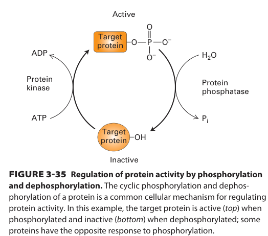
| phosphorylation | 磷酸化 |
| dephosphorylation | 去磷酸化 |
| protein kinase | 蛋白激酶 |
| protein phosphatase | 蛋白磷酸酶 |
| Active | 活性 |
| Inactive | 非活性 |
泛素化和去泛素化共价调控蛋白质活性
泛素和泛素样蛋白（人类中有十多种）可以受调控方式共价连接到靶蛋白质，类似于磷酸化。去泛素化酶可以类似于磷酸酶作用的方式逆转泛素化。然而，这些泛素修饰在结构上远比磷酸化复杂，因此可介导泛素化蛋白质与其他细胞蛋白质之间的多种不同相互作用。泛素化可涉及将单个泛素附着到蛋白质上（单泛素化）、将多个单个泛素分子加到一个靶蛋白质的不同位点（多泛素化）、或将泛素聚合物链加到蛋白质上（多聚泛素化）。另一个变异来源是泛素分子中不同的氨基可用于与另一个泛素中 C 端 Gly-76 形成异肽键以形成多聚泛素链。泛素中所有七个赖氨酸残基（Lys-6、Lys-11、Lys-27、Lys-29、Lys-33、Lys-48 和 Lys-63）及其 N 端氨基都可参与泛素间连接。不同的泛素连接酶对要泛素化的靶标（底物）和参与泛素间异肽连接的泛素上的赖氨酸侧链（Lys-63 或 Lys-48 等）都特异（图 3-36）。这些多种形式的泛素化导致产生多种识别表面，可参与与含十多种不同泛素结合结构域（UBD）的数百种蛋白质（人类中 >200 种）的许多蛋白质-蛋白质相互作用。此外，任何给定多聚泛素链都有可能同时结合不止一种含 UBD 的蛋白质，导致形成依赖泛素化的多蛋白复合物。一些去泛素化酶可从修饰的蛋白质上去除完整的多聚泛素链（"锚定"链），从而产生不与其他蛋白质共价连接的多聚泛素链（"未锚定"链）。即使这些未锚定链也可能起调控作用。鉴于这种巨大的结构多样性，细胞使用泛素化和去泛素化来控制许多不同的细胞功能并不令人惊讶。
我们已经看到通过 Lys-48 残基的多聚泛素化如何用于标记蛋白质进行蛋白酶体降解。
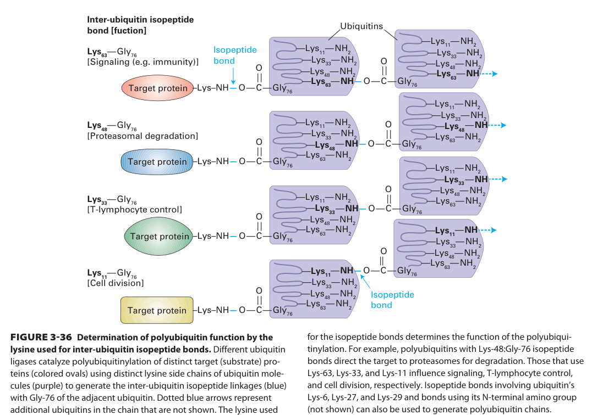
| polyubiquitin | 多聚泛素 |
| isopeptide bond | 异肽键 |
| ubiquitin ligase | 泛素连接酶 |
| Lys-48 | Lys-48 |
| Lys-63 | Lys-63 |
| Lys-11 | Lys-11 |
| Lys-33 | Lys-33 |
有证据表明通过其他 Lys 残基（例如 Lys-11 和 Lys-33，但非 Lys-63）的多聚泛素化也可靶向蛋白质进行蛋白酶体降解。引人注目的是，与蛋白质降解无关的泛素化也可控制多种细胞功能，包括通过内吞作用使分子内化（见第 14 章）、受损 DNA 的修复、代谢、信使 RNA 合成（转录）、防御病原体、细胞分裂/细胞周期进程、细胞信号通路、蛋白质在细胞内的运输和细胞凋亡。用于形成泛素间异肽键的赖氨酸可因受调控的细胞系统而异（见图 3-36）。例如，Lys-63 连接的多聚泛素化用于许多细胞识别和信号系统，如识别胞内病毒和细菌的存在及随之诱导保护性免疫反应，以及将这些病原体导向溶酶体降解。Lys-11 连接的多聚泛素链调控细胞分裂。Lys-33 连接的链帮助抑制称为 T 淋巴细胞（见第 23 章）的专门白细胞上受体的活性，从而控制这些淋巴细胞的活性和功能。
蛋白水解切割不可逆地激活或灭活某些蛋白质
与可逆的磷酸化和泛素化不同，通过蛋白水解切割激活或灭活蛋白质功能是调控蛋白质活性的不可逆机制。例如，许多多肽激素（如胰岛素）合成为较长的前体，在从细胞分泌前，其某些肽键必须被水解才能正确折叠。在某些情况下，一条长的前体原激素多肽被切割成几种不同的活性激素。为防止胰腺丝氨酸蛋白酶在到达小肠前不适当地消化蛋白质，它们合成为酶原--非活性前体酶。胰蛋白酶原（胰蛋白酶的酶原）N 端附近的一个肽键被小肠中一种高度特异的蛋白酶切割，产生新的 N 端残基（Ile-16），其氨基可与内部天冬氨酸的羧酸侧链形成离子键。此结合引起构象变化，打开底物结合位点，激活酶。活性胰蛋白酶随后可激活胰蛋白酶原、胰凝乳蛋白酶原和其他酶原。类似的但更精细的蛋白酶级联（一种蛋白酶激活其他蛋白酶的非活性前体）可放大初始信号，在多个系统中起重要作用，如血液凝固级联和补体系统（见第 23 章）。仔细调控此类系统的重要性显而易见--例如，不当凝固可能致命地堵塞循环系统，而凝固不足可能导致无法控制的出血。
一种不寻常且罕见的蛋白水解加工类型，称为蛋白质自剪接，发生在细菌和某些真核生物中。此过程类似于剪辑电影：多肽的一个内部片段被去除，多肽的两端被重新连接（连接）。与其他形式的蛋白水解加工不同，蛋白质自剪接是自催化过程，自行进行而无需其他酶参与。被切除的肽似乎通过类似于某些 RNA 分子加工中使用的机制从蛋白质中自我消除（见第 10 章）。在脊椎动物细胞中，某些蛋白质的加工包括自切割，但随后的连接步骤缺失。其中一种蛋白质是 Hedgehog，一种膜结合信号分子，对许多发育过程至关重要（见第 16 章）。
高阶调控包括对蛋白质位置的控制
迄今为止描述的所有调控机制都在其作用部位局部影响蛋白质，改变蛋白质浓度或开启/关闭其活性。然而，细胞的正常运作还需要将蛋白质分隔到特定区室，如线粒体、细胞核或溶酶体。对于酶而言，区室化不仅提供了控制底物递送或产物输出的机会，还允许竞争反应在细胞不同部位同时进行。我们在第 13、14 章描述细胞用于将各种蛋白质导向不同区室的机制。
第 3.4 节关键概念
蛋白质功能的调控
● 蛋白质可在蛋白质合成、蛋白质降解水平，或通过非共价或共价相互作用调节蛋白质内在活性水平进行调控。
● 胞内蛋白质的寿命很大程度上由其对蛋白水解降解的敏感性决定。
● 许多蛋白质被泛素连接酶用多聚泛素标签标记销毁，然后在蛋白酶体（具有内部腔多个蛋白酶活性位点的大型圆柱复合物）内降解（见图 3-31）。
● 由于去泛素化酶的活性，蛋白质的泛素化是可逆的。
● 在别构中，一个配体分子（别构效应物）的非共价结合诱导构象变化，改变蛋白质的活性或对其他配体的亲和力。别构效应物在结构上可与受其影响结合的其他配体相同或不同。别构效应物可以是激活剂或抑制剂。
● 在结合多个相同配体分子（如氧）的多聚体蛋白质（如血红蛋白）中，一个配体分子的结合可能增加或减少蛋白质对后续配体分子的亲和力。这种别构称为协同性（见图 3-32）。
● 几种别构机制作为开关，以可逆方式开启和关闭蛋白质活性。
● 两类胞内开关蛋白调控多种细胞过程：(1) Ca²⁺ 结合蛋白（如钙调蛋白）和 (2) GTP 酶超家族成员（如 Ras），它们在活性 GTP 结合形式和非活性 GDP 结合形式之间循环（见图 3-34）。GTP 酶参与包括调节 GTP 酶在其活性与非活性形式之间循环的蛋白质（GAP、GEF、GDI）的复杂调控网络。
● 蛋白激酶和磷酸酶对丝氨酸、苏氨酸或酪氨酸侧链羟基的磷酸化和去磷酸化，为众多蛋白质提供可逆的开/关调控（见图 3-35）。
● 泛素与蛋白质共价附着性质的变化（单泛素化、多泛素化和涉及泛素单体之间多种连接的多聚泛素化）参与多种细胞功能，而非仅蛋白酶体介导的降解，如蛋白质位置或活性的变化（见图 3-36）。
● 许多类型的共价和非共价调控是可逆的，但某些形式的调控（如蛋白水解切割）是不可逆的。
● 高阶调控包括蛋白质的胞内位置或区室化。
3.5 蛋白质的纯化、检测与表征
蛋白质通常必须先被纯化，才能详细研究其结构和作用机制。然而，由于蛋白质在大小、形状、寡聚状态、电荷和水溶性上各不相同，没有单一方法可用于分离所有蛋白质。从某特定类型细胞中估计的 10,000 种不同蛋白质中分离出某一种特定蛋白质是一项艰巨任务，需要既分离蛋白质又检测特定蛋白质存在的方法。
任何分子（无论是蛋白质、碳水化合物还是核酸）都可基于其一种或多种物理或化学特性的差异与其他分子分离（解析）。两种蛋白质之间差异越大越多，分离越容易高效。实际操作中，某种蛋白质在生物样本中越丰富，将其与样本中其他分子分离就越容易。用于分离蛋白质的三个最广泛使用的特性是：大小（定义为长度或质量）；净电荷；以及对特定配体的亲和力。本节简要概述几种重要的蛋白质分离技术；这些分离技术也适用于核酸和其他生物分子的分离。然后考虑使用放射性化合物追踪生物活性。最后，考虑几种表征蛋白质质量、序列和三维结构的技术。
离心可分离质量或密度不同的颗粒和分子
典型蛋白质纯化方案的第一步是离心。离心原理是悬浮液中两种具有不同质量或密度的颗粒以不同速率沉降到试管底部。记住，质量是样品的重量（以道尔顿或分子量单位测量），而密度是其质量与体积之比。蛋白质在质量上差异很大，但在密度上不大。除非蛋白质附着脂质或碳水化合物，其密度与平均蛋白质密度 1.37 g/cm³ 的差异不超过 15%。更重或更密的分子比较轻或较不密的分子沉降更快。
离心机通过使悬浮液中的颗粒承受高达重力（g）100 万倍的离心力来加速沉降，这可使小至 10 kDa 的颗粒沉降。现代超速离心机通过达到 150,000 转/分钟（rpm）或更高的速度来产生这些力。然而，质量 5 kDa 或更小的颗粒即使在如此高的转速下也不会均匀沉降。现代超速离心机能以高达每秒 2500 转的速率旋转一个几磅重的转子（约美式橄榄球大小），样品装在其中的管子里。
离心用于两个基本目的：(1) 作为制备技术分离一种材料以获得足够量进行后续实验；(2) 作为分析技术测量大分子的物理性质（如分子量、密度、形状和平衡结合常数）。蛋白质的沉降常数 s 是其沉降速率的度量，常以 Svedberg 单位（S）表示，典型大蛋白复合物约 3–5S，蛋白酶体 26S，真核核糖体 80S。
差速离心 从细胞或组织纯化蛋白质最常见的初始步骤是通过差速离心将水溶性蛋白质与不溶性细胞物质分离。起始混合物（通常是细胞匀浆）倒入管中并离心，迫使细胞器（如细胞核）以及大的未破碎细胞或大细胞碎片作为沉淀收集在底部；可溶性蛋白质留在上清液中（图 3-37a）。然后倾出上清液组分，上清液或沉淀都可经受其他纯化方法。
速率区带离心 基于质量差异，水溶性蛋白质可通过离心穿过密度递增的溶液（密度梯度）来分离。常用浓缩蔗糖溶液在离心管中形成密度梯度（管底部密度更高，图 3-37b）。当蛋白质混合物放在梯度顶部并离心时，每种蛋白质以由其物理性质控制的速率向下迁移，分离成不同质量蛋白质的条带。此技术（速率区带离心）中，样品离心时间恰好足以将目的分子分离成离散区带（见图 3-37b）。若离心时间过短，分离不充分；若过长，所有蛋白质混在管底。尽管沉降速率受质量强烈影响，但形状变化也影响沉降速率，故此法很少能精确确定分子量。
电泳基于荷质比分离分子
电泳（在电场影响下分离混合物中分子的技术）是研究蛋白质和核酸最常用的技术之一。溶解的分子在电场中以由其荷质比和迁移介质物理性质决定的速度移动。若两种分子质量和形状相同，净电荷较大者更快向相反极性电极移动。
SDS-聚丙烯酰胺凝胶电泳 由于许多大小和形状不同的蛋白质有几乎相同的荷质比，在液体溶液中电泳几乎不能分离不同长度的分子。然而，成功分离可通过
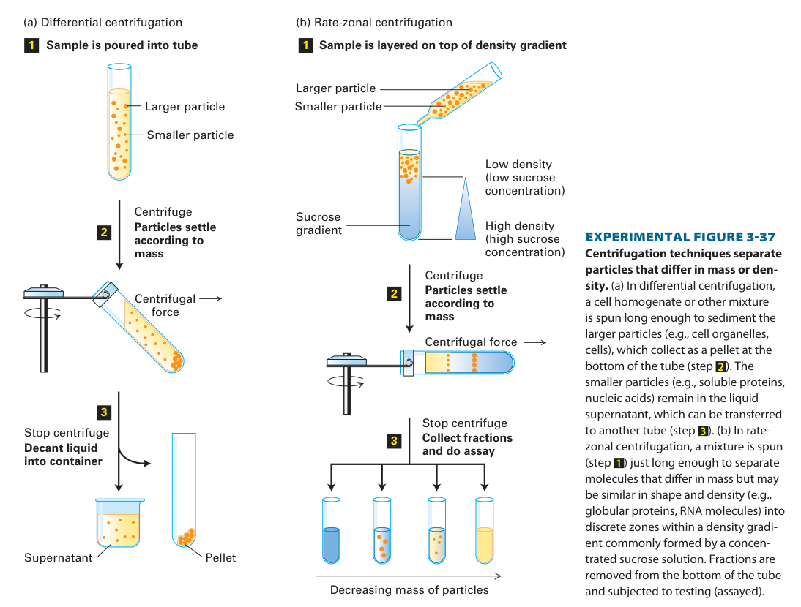
| differential centrifugation | 差速离心 |
| supernatant | 上清 |
| pellet | 沉淀 |
| rate-zonal centrifugation | 速率区带离心 |
在各种凝胶中电泳实现。凝胶作为筛子，允许较小分子比大分子更快通过其孔。蛋白质的电泳分离最常在聚丙烯酰胺凝胶中进行。通过适当调整聚丙烯酰胺和交联试剂浓度及电场强度，大小差异很大的蛋白质可通过聚丙烯酰胺凝胶电泳（PAGE）解析。
在解析蛋白质混合物最强大的技术中，蛋白质在凝胶电泳前和过程中暴露于离子去垢剂 SDS（十二烷基硫酸钠）（图 3-38）。SDS 使蛋白质变性，因为它结合疏水侧链，破坏稳定构象的疏水相互作用。SDS 处理通常与加热和断裂二硫键的还原剂结合。这些条件下大多数多聚体蛋白质解离成亚基。通常结合到蛋白质的 SDS 量与多肽链长度成正比，赋予每种蛋白质恒定荷质比（带负电的十二烷基硫酸根是主要电荷贡献者）。因此链长度（与质量成正比）是 SDS-PAGE 中迁移速率的主要决定因素。即使分子量差异小于 10% 的链也可解析。蛋白质分子量可通过比较其迁移距离与已知分子量标准（"分子量标准"）的迁移距离估算（迁移距离与分子量对数大致呈线性关系）。
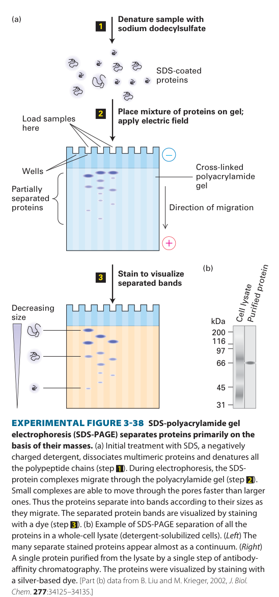
| SDS-PAGE | SDS-PAGE |
| SDS | 十二烷基硫酸钠 |
| polyacrylamide gel | 聚丙烯酰胺凝胶 |
双向凝胶电泳 SDS-PAGE 可分离质量差异较大的蛋白质，但不能轻易解析质量相似的蛋白质。为分离质量相似的蛋白质，必须利用另一种物理特性，最常用的是电荷。两个质量相似的不相关蛋白质不太可能有相同净电荷，因为其序列因而酸碱残基数目不同。在双向凝胶电泳中，蛋白质先按电荷再按质量依次分离（图 3-39a）。第一步用等电聚焦（IEF）：蛋白质在 pH 梯度中迁移直到达到等电点（pI，净电荷为零时的 pH）。IEF 可解析仅相差一个电荷单位的蛋白质，甚至能分离同一蛋白质的磷酸化和非磷酸化版本。然后 IEF 凝胶条纵向放在 SDS-聚丙烯酰胺凝胶板边缘，按质量做第二维分离。依次按电荷和质量解析可实现细胞蛋白质的出色分离（图 3-39b）。如今精密质谱方法常代替双向凝胶电泳。
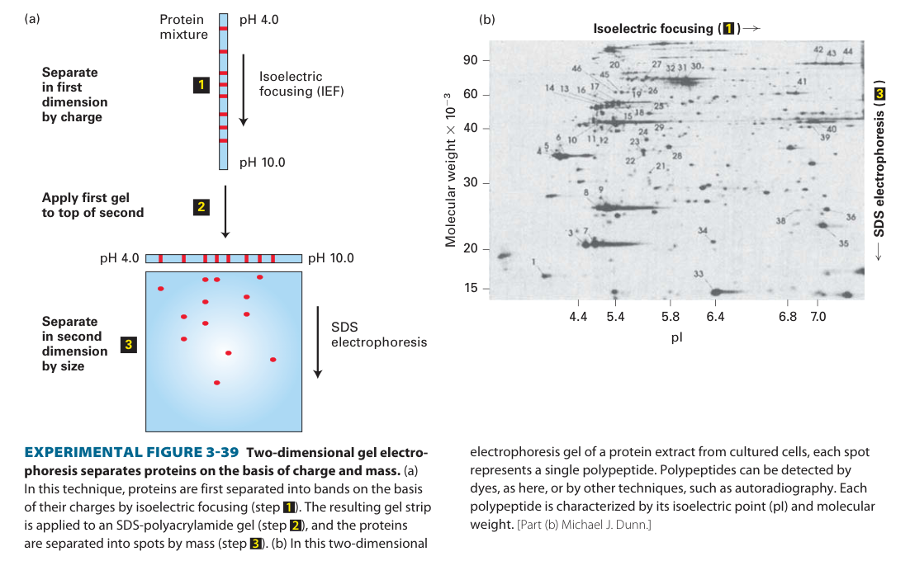
| isoelectric focusing | 等电聚焦 |
| two-dimensional gel electrophoresis | 双向凝胶电泳 |
液相色谱按质量、电荷或亲和力解析蛋白质
液相色谱（LC）基于溶液中分子与特定固体表面差异相互作用的原理。样品放在紧密填充球形珠柱顶部，流下柱，与表面频繁相互作用的分子流过更慢。流出柱的流体小份（级分）依次收集，分析其内容和活性。柱中珠的性质决定分离取决于质量、电荷还是结合性质差异。
凝胶过滤色谱 在多孔珠柱（聚丙烯酰胺、葡聚糖或琼脂糖）上分离质量不同的蛋白质。较小蛋白质更容易穿透珠表面凹陷，通过柱更慢（图 3-40a）。若用已知质量蛋白质校准柱，洗脱体积可估算蛋白质质量。
离子交换色谱 基于电荷差异分离。带正电珠（NH₃⁺）保留带负电（酸性）蛋白质；带负电珠（COO⁻）保留带正电（碱性）蛋白质。用浓度递增的盐梯度洗脱：弱结合蛋白质先洗脱，高电荷蛋白质最后洗脱（图 3-40b）。
亲和色谱 基于蛋白质特异结合其他分子的能力。结合目的蛋白质的配体共价附着到珠上。免疫亲和色谱中，附着到珠上的是对目的蛋白质特异的抗体（图 3-40c）。亲和柱只保留结合珠上分子的蛋白质；通过加过量可溶配体、去垢剂、或改变盐浓度/pH 破坏结合来洗脱。
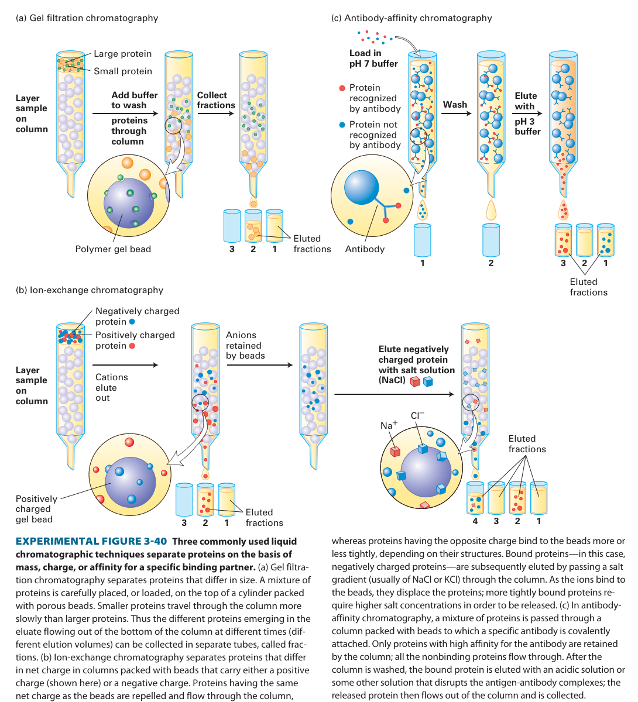
| gel filtration | 凝胶过滤 |
| ion-exchange chromatography | 离子交换色谱 |
| affinity chromatography | 亲和色谱 |
高特异的酶和抗体测定可检测单个蛋白质
蛋白质纯化需要特异测定来检测其存在。测定利用蛋白质的独特特征：结合特定配体、催化特定反应或被特异抗体识别。测定还须简单快速且灵敏（许多常见测定只需 10⁻⁹ 至 10⁻¹² g 材料）。
产色酶反应 一些酶活性测定使用产色底物（反应中变色）。由于酶对底物的特异性，只有含酶的样品变色；变化速率提供酶量度量。催化产色反应的酶可连接到抗体上"报告"抗原存在。
抗体测定 抗体紧密且特异结合抗原。可用酶、荧光分子或放射性同位素标记抗体检测抗原。例如荧光素酶连接抗体后，在 ATP 和荧光素存在时发光。一抗结合靶蛋白后，可用标记的二抗结合一抗（抗体"三明治"），提供高灵敏度。重要的是，抗体只识别靶抗原上的表位；若表位被改变或阻挡，结合可能丧失。
为产生抗体，将完整蛋白质或片段注射到动物（兔、小鼠或山羊）体内。有时用基于蛋白质序列的 10–15 残基短合成肽作抗原。将表位附着到不相关蛋白质上称表位标记。
通过附着绿色荧光蛋白检测蛋白质 检测活细胞内特定蛋白质可使用绿色荧光蛋白（GFP，水母中的天然荧光蛋白，见图 4-16）。含目的蛋白质和 GFP 的嵌合蛋白在细胞中表达，可确定其量和胞内分布（第 4 章描述）。
检测凝胶中的蛋白质 凝胶中蛋白质通常用有机染料（如考马斯蓝，检测约 1000 ng，下限 4–10 ng）或银染/荧光染色（下限约 1 ng）染色。膜上可视化最常用免疫印迹。
免疫印迹（Western 印迹）结合凝胶电泳的解析能力和抗体特异性。用一抗（对目的蛋白质特异）和标记二抗，二抗所连酶产生有色产物或化学发光（图 3-41）。
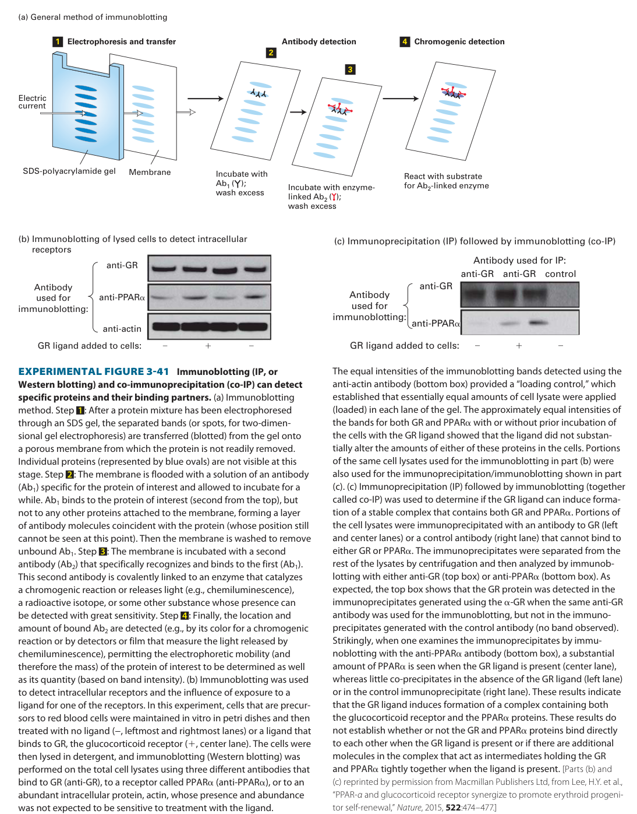
| Western blotting | Western印迹 |
| immunoprecipitation | 免疫沉淀 |
| primary antibody | 一抗 |
| secondary antibody | 二抗 |
免疫沉淀（IP）利用抗体特异性从复杂混合物分离目的蛋白质。抗体结合靶蛋白后，加试剂使抗体-靶复合物沉淀。若靶紧密结合其他分子，它们共沉淀（共免疫沉淀，co-IP），常用于鉴定四级结构和超分子复合物。
放射性同位素是检测生物分子不可或缺的工具
追踪分子的灵敏方法是检测放射标记发出的放射性。生物研究中有用的放射性同位素包括磷-32（半衰期 14.3 天）、碘-125（60.4 天）、硫-35（87.5 天）、氚（12.4 年）、碳-14（5730.4 年）（表 3-1）。半衰期越短，比活越高。
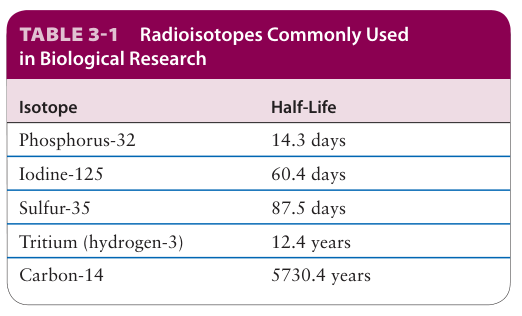
| Isotope | 同位素 |
| Half-Life | 半衰期 |
| Phosphorus-32 | 磷-32 |
| Tritium | 氚 |
| Carbon-14 | 碳-14 |
放射标记大分子的常见方法是向培养基加放射标记前体（如 [³⁵S]甲硫氨酸/半胱氨酸标记蛋白质、³²P-磷酸标记 ATP/磷蛋白、³H-核苷酸前体标记核酸）。用硫-35 标记的甲硫氨酸和半胱氨酸广泛用于标记蛋白质（高比活 >10¹⁵ dpm/mmol）。放射性同位素替换正常原子的标记化合物化学性质几乎不变（如 [³H]亮氨酸）；而 ¹²⁵I 需共价加到不含碘的分子上（如 ¹²⁵I-胰蛋白酶），可能改变生物活性。
放射自显影用二维检测器（照相乳胶或电子检测器）检测放射标记分子。盖革计数器测量 β 粒子/γ 射线产生的离子（手持，用于实验室安全监测）。液体闪烁计数器用荧光化合物将衰变能量转为闪光由光电管计数。磷屏成像仪用二维阵列检测器存储每像素衰变数。
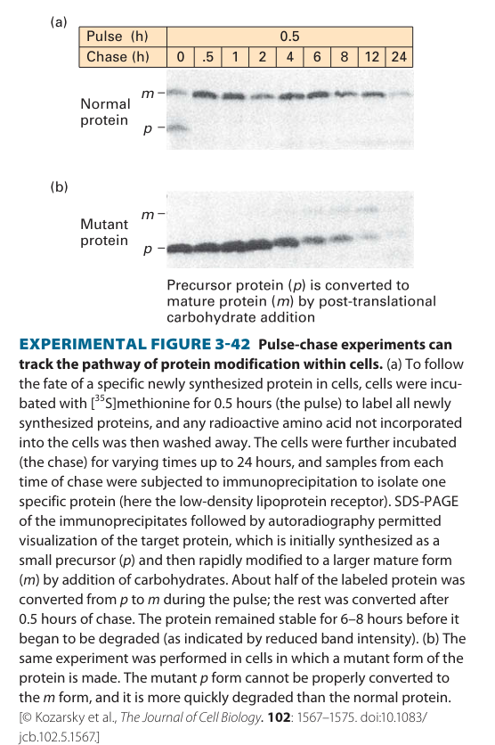
| pulse-chase | 脉冲追踪 |
| [35S]methionine | [35S]甲硫氨酸 |
脉冲追踪实验追踪蛋白质胞内位置或修饰随时间的变化。细胞暴露于放射标记化合物（"脉冲"），洗去后加过量未标记化合物（"追踪"），定期取样测定放射标记的位置或化学形式。脉冲追踪结合免疫沉淀和 SDS-PAGE 放射自显影常用于追踪蛋白质合成、修饰和降解速率。经典用途是阐明分泌蛋白从内质网到细胞表面的途径（见第 14 章）。
质谱可测定蛋白质的质量和序列
质谱（MS）是表征蛋白质的强大技术，测定蛋白质或片段的质量，由此可确定部分或全部序列。质谱仪有四个关键部件：离子源、质量分析器、检测器和计算机化数据系统。产生离子最常用 MALDI（基质辅助激光解吸/电离）和 ES（电喷雾）。质量分析器最常用 TOF（飞行时间）和离子阱。MS 高度灵敏，能检测少至 100 阿托摩尔肽。MS/MS（串联质谱）可选择母离子断裂成片段，由片段质量差推断短肽（<25 残基）序列。
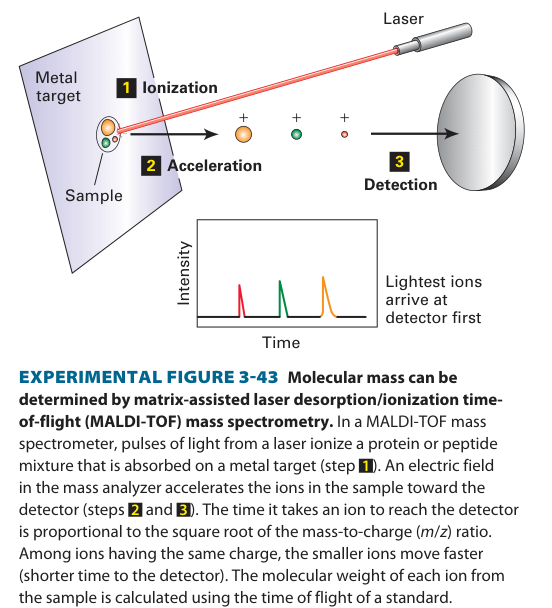
| MALDI-TOF | MALDI-TOF |
| mass spectrometry | 质谱 |
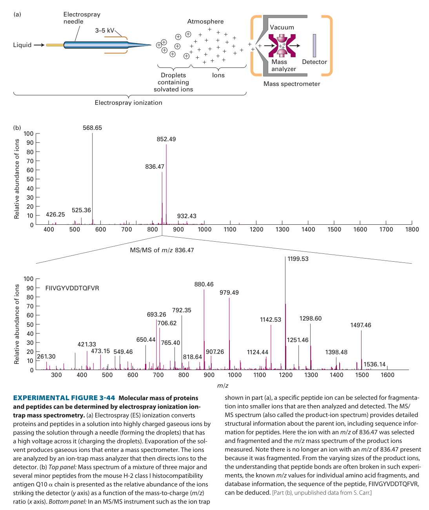
| electrospray | 电喷雾 |
| ion-trap | 离子阱 |
LC-MS/MS 将液相色谱与 ES 串联质谱联用，近乎连续分析复杂蛋白质混合物。比较两样品蛋白质量需内标或稳定同位素标记（如 SILAC，细胞培养中氨基酸稳定同位素标记）。
蛋白质一级结构可由化学方法和基因序列确定
经典方法是 Edman 降解：标记 N 端氨基酸、切下、用 HPLC 鉴定，循环重复。约 1985 年前常用，现主要通过基因组和 mRNA 序列分析确定。结合 MS 的肽质量指纹（用特定蛋白酶消化的肽分子量列表）搜索基因组数据库可鉴定蛋白质。
蛋白质构象由精密物理方法确定
X 射线晶体学 由 Max Perutz 和 John Kendrew 于 1950 年代开创。X 射线（波长约 0.1–0.2 nm）穿过蛋白质晶体，电子散射产生衍射斑点图（图 3-45）。由衍射图计算电子密度图，将分子模型拟合到电子密度。迄今已建立超过 90,000 个三维结构（含 35,000 多种蛋白质序列），存于 Protein Data Bank（http://www.rcsb.org）。
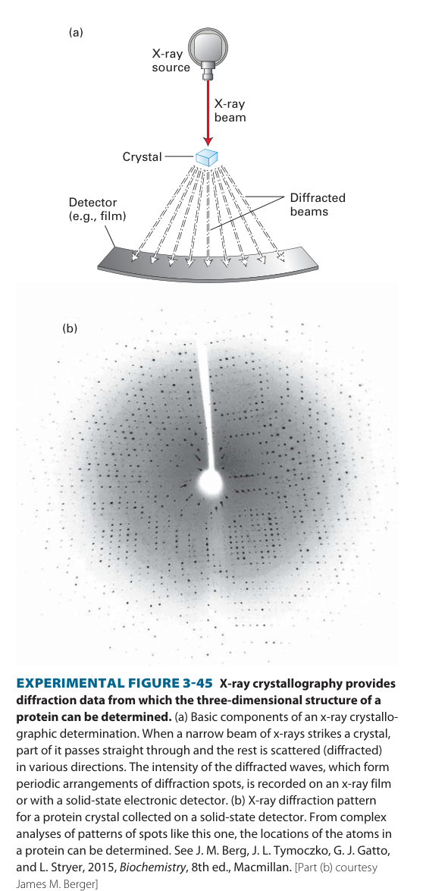
| x-ray crystallography | X射线晶体学 |
| diffraction | 衍射 |
| electron density map | 电子密度图 |
冷冻电子显微镜 对难结晶的大蛋白质复合物有用。稀蛋白质样品薄层涂于载网，在液氦中快速冷冻，在冷冻水合状态检查（图 3-46）。用低电子剂量记录图像，计算机算法按取向分组并计算平均图像，重建三维结构。最新进展可辨别主链和侧链。
| cryoelectron microscopy | 冷冻电子显微镜 |
| mitochondrial ribosome | 线粒体核糖体 |
NMR 光谱法 适合约 200 个氨基酸以下的小蛋白质。浓缩蛋白质溶液置于磁场中，测量射频对核自旋态的影响，由残基间距离推断结构。NMR 不需结晶（优势），但限于约 50 kDa 以下蛋白质。可提供蛋白质动力学信息（构象变化）。氢/氘交换质谱（HXMS）研究蛋白质动力学和蛋白质-蛋白质相互作用。
第 3.5 节关键概念
蛋白质的纯化、检测与表征
● 蛋白质可基于其物理和化学性质差异与其他细胞组分及彼此分离。
● 离心基于沉降速率（受质量和形状影响）分离蛋白质（见图 3-37）。
● 电泳基于在施加电场中的移动速率分离蛋白质。SDS-PAGE 可解析分子量差异 10% 或更小的多肽链（见图 3-38）。双向凝胶电泳先按电荷再按质量分离提供额外解析度。
● 液相色谱基于通过填充球形珠柱的移动速率分离蛋白质。质量不同在凝胶过滤柱解析；电荷不同在离子交换柱；配体结合性质不同在亲和柱（见图 3-40）。
● 各种测定用于检测和定量蛋白质，一些用发光反应，其他用酶和产色底物产生有色信号。
● 抗体是用于检测、定量和分离蛋白质的强大试剂。
● 免疫印迹（Western 印迹）利用抗体检测的高特异性和 SDS-PAGE 高分辨率分离研究特定蛋白质（见图 3-41）。
● 免疫沉淀（IP）用特异抗体从复杂混合物分离目的蛋白质；紧密结合分子共沉淀（共免疫沉淀）。
● 同位素（放射性和非放射性）在研究蛋白质中起关键作用，可掺入分子或作附加标签，用于检测合成、位置、加工和稳定性。
● 放射自显影用二维检测器检测放射标记分子。脉冲追踪实验确定蛋白质胞内命运（见图 3-42）。
● 质谱是检测、鉴定和表征蛋白质和肽的非常灵敏高精度方法。
● 蛋白质三维结构由 X 射线晶体学、冷冻电子显微镜和 NMR 光谱法获得。X 射线晶体学最详细但需结晶；冷冻电镜对大复合物有用；NMR 限于相对小的蛋白质。
3.6 蛋白质组学
20 世纪大部分时间，蛋白质研究主要限于分析单个蛋白质。例如，通过确定酶的酶活性（底物、产物、反应速率、辅因子需求、pH 等）、结构和作用机制来研究酶。有时也研究参与代谢通路的少数酶之间的关系。在更大尺度上，在细胞或组织背景下考察酶的定位和活性。突变、疾病或药物对酶表达和活性的影响也可能是研究主题。这种多管齐下的方法为单个蛋白质或相对少数相互作用蛋白质的功能和作用机制提供了深入见解。然而，这种逐个研究蛋白质的方法不能轻易提供细胞、组织或整个生物体蛋白质组中所发生情况的全局图景。
蛋白质组学是研究生物系统中全部或大子集蛋白质的学科
基因组学（基因组 DNA 测序及其相关技术，如同时分析细胞和组织中所有 mRNA 水平）的出现清楚地表明，全局或系统生物学方法可提供独特且极具价值的见解。许多科学家认识到，生物系统中蛋白质的全局分析有可能为我们的理解做出同样有价值的贡献。于是诞生了一个新领域--蛋白质组学。蛋白质组学是在整个生物体、组织、细胞和亚细胞水平上，系统研究全部或子集蛋白质的量、修饰、相互作用、定位和功能。
蛋白质组学研究涉及许多广泛问题：
● 在给定样品（整个生物体、组织、细胞、亚细胞区室）中，整个蛋白质组的多少部分被表达（即存在哪些蛋白质）？
● 样品中存在的蛋白质中，其相对丰度如何？
● 蛋白质的不同剪接形式和化学修饰形式（如磷酸化、甲基化、脂肪酰化）的相对量如何？
● 哪些蛋白质存在于大型多蛋白复合物中，每个复合物中有哪些蛋白质？这些复合物的功能是什么，它们如何相互作用？
● 当细胞的状态（如生长速率、细胞周期阶段、分化、应激水平）改变时，细胞中的蛋白质或细胞分泌的蛋白质是否以特征性（指纹样）模式变化？哪些蛋白质变化，如何变化（相对量、修饰、剪接形式等）？[回答这些问题需要一种蛋白质表达谱分析形式，补充第 9 章讨论的转录（mRNA）谱分析。]
● 此类指纹样变化能否用于诊断目的？例如，某些癌症或心脏病是否引起血液蛋白质的特征性变化？蛋白质组指纹能否帮助确定给定癌症对某特定化疗药物是抗性还是敏感？[蛋白质组指纹也可作为研究状态变化背后机制的起点。显示对特定状态具诊断性变化的蛋白质（和其他生物分子）称为生物标志物。]
● 蛋白质组的变化能否帮助定义药物靶点或提示药物可能诱发毒性副作用的机制？（若如此，可能可以工程化改造副作用更少的药物版本。）
这些只是可用蛋白质组学解决的少数问题。用于回答这些问题的方法与问题本身一样多样，且数量正在迅速增长。
质谱先进技术对蛋白质组分析至关重要
蛋白质组学技术（如质谱）的进步深刻影响可实际研究的问题类型。多年来，双向凝胶电泳允许研究者分离、展示和表征复杂蛋白质混合物（见图 3-39）。双向电泳凝胶上的斑点可被切下，蛋白质通过蛋白水解（如胰蛋白酶消化）片段化，片段由 MS 鉴定。此双向凝胶电泳方法的替代是高通量 LC-MS/MS。图 3-47 概述了一般 LC-MS/MS 方法：复杂蛋白质混合物用蛋白酶消化；由此产生的无数肽由 LC 分馏成多个较不复杂的级分，这些级分通过电喷雾电离缓慢但连续地注入串联质谱仪。然后级分依次经受多个
| LC-MS/MS | LC-MS/MS |
| electrospray ionization | 电喷雾电离 |
| tandem mass spectrometer | 串联质谱仪 |
MS/MS 循环，直到许多肽的序列被确定并用于鉴定原始生物样品中的蛋白质。目前检测全细胞或组织中相当一部分蛋白质需要含 50 μg 以上蛋白质的样品，相当于约 70,000–200,000 个哺乳动物细胞的蛋白质含量。提高方法灵敏度的工作正在进行，以便最终能分析单个细胞的蛋白质组。
LC-MS/MS 用于鉴定每个细胞器中许多蛋白质的例子见图 3-48。来自小鼠肝组织的细胞被机械破碎以释放细胞器，细胞器通过密度梯度离心部分分离。梯度中细胞器的位置用识别先前鉴定的细胞器特异蛋白的抗体进行免疫印迹确定。然后梯度级分经受 LC-MS/MS 鉴定每个级分中的蛋白质，并将许多
| density-gradient centrifugation | 密度梯度离心 |
| immunoblot | 免疫印迹 |
| Mitochondria | 线粒体 |
| Golgi | 高尔基体 |
| Endoplasmic reticulum | 内质网 |
| Early endosome | 早期内体 |
| Cytosol | 胞质 |
单个蛋白质在梯度中的分布与细胞器的分布比较。此策略允许将许多单个蛋白质分配到一个或多个细胞器（细胞器蛋白质组分析）。最近，细胞器纯化、MS、生化定位和计算方法的组合已用于显示至少一千种不同蛋白质定位于人和小鼠的线粒体。
蛋白质组学方法结合分子遗传学方法目前正用于鉴定真核细胞中的所有蛋白质复合物。例如，在酿酒酵母中，已鉴定约 500 个复合物，平均每个复合物 4.9 种不同蛋白质。这些复合物反过来参与至少 400 种复合物间相互作用。此类系统蛋白质组研究正为细胞内蛋白质的组织以及蛋白质如何协同使细胞存活和发挥功能提供新见解。
磷酸化蛋白质组学--复杂混合物中蛋白质磷酸化位点的鉴定和定量--在细胞代谢和调控分析中发挥日益重要的作用。如我们已学，激酶和磷酸酶对蛋白质的可逆磷酸化是细胞中调控蛋白质的关键机制。磷酸化蛋白质组学允许同时测定许多蛋白质的磷酸化状态，从而为分析复杂细胞调控网络提供重要工具。只有一部分（某些情况下只有小部分）特定蛋白质可能被磷酸化。因此磷酸化蛋白质组分析可能需要比标准蛋白质组分析多 50–100 倍的初始细胞或组织样品材料（每样品约 2.5 至 20 mg 以上总细胞蛋白）。因此，研究者通常使用含金属（如 Fe³⁺ 或 TiO₂）或含抗体的亲和色谱方法，在将磷酸肽经受 LC-MS/MS 分析前将磷酸肽与非磷酸化肽分离（磷酸肽富集）。
第 3.6 节关键概念
蛋白质组学
● 蛋白质组学是在整个生物体、组织、细胞和亚细胞水平上，系统研究生物系统中全部或子集蛋白质的量（及量的变化）、修饰、相互作用、定位和功能。
● 蛋白质组学为细胞内蛋白质的基本组织以及该组织如何受细胞状态（如分化为不同细胞类型；对应激、疾病和药物的反应）影响提供见解。
● 多种方法用于蛋白质组分析，包括双向凝胶电泳、密度梯度离心和质谱（尤其是 LC-MS/MS）。
● 蛋白质组学已帮助开始鉴定细胞器的蛋白质组（"细胞器蛋白质组分析"）以及单个蛋白质组织成多蛋白复合物的组织（见图 3-48）。
● 磷酸化蛋白质组学是蛋白质组学的专门应用，鉴定细胞中磷酸化蛋白质的集合（磷酸化蛋白质组），并表征这些蛋白质磷酸化水平如何随细胞状态变化而变化。